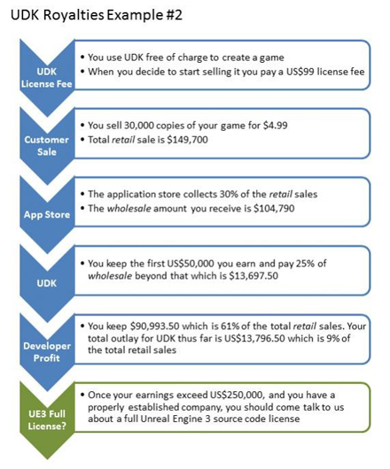
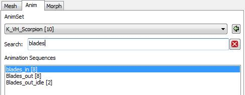

UDN
Search public documentation:
DevelopmentKitBuildUpgradeNotes
日本語訳
中国翻译
한국어
Interested in the Unreal Engine?
Visit the Unreal Technology site.
Looking for jobs and company info?
Check out the Epic games site.
Questions about support via UDN?
Contact the UDN Staff
中国翻译
한국어
Interested in the Unreal Engine?
Visit the Unreal Technology site.
Looking for jobs and company info?
Check out the Epic games site.
Questions about support via UDN?
Contact the UDN Staff
Build Notes for Unreal Development Kit releases
Document Summary: Important change notes for Unreal Devlopment Kit releases.- Build Notes for Unreal Development Kit releases
- Overview
- Build Support
- UDK Versions
- Latest Releases
- May UDK Beta Upgrade Notes
- March UDK Beta Upgrade Notes
- Unreal Editor
- Material Editor
- Post-process editor improvements
- Mesh Paint: marking an actor's ‘bHidden’ flag will no longer prevent it from being painted on
- Texture paint workflow automation will now allow you to duplicate textures and hook them up to a new material instance with a single button click
- Refreshing the list in Unreal Frontend so it no longer looks just for additional devices, but all devices attached. This prevents devices used previously showing, even though they may no longer be connected
- You can now use the ‘Screen Capture’ option in Unreal Console to take a screenshot
- New and Updated UDN Pages
- February UDK Beta Upgrade Notes
- January UDK Beta Upgrade Notes
- December 2011 UDK Beta Upgrade Notes
- November 2011 UDK Beta Upgrade Notes
- October 2011 UDK Beta Upgrade Notes
- September 2011 UDK Beta Upgrade Notes
- August 2011 UDK Beta Upgrade Notes
- July 2011 UDK Beta Upgrade Notes
- June 2011 UDK Beta Upgrade Notes
- May 2011: UDKInstall-2011-05-BETA
- April 2011: UDKInstall-2011-04-BETA
- March 2011: UDKInstall-2011-03-BETA
- February 2011: UDKInstall-2011-02-BETA
- January 2011: UDKInstall-2011-01-BETA
- December 2010: UDKInstall-2010-12-BETA
- November 2010: UDKInstall-2010-11-BETA
- October 2010: UDKInstall-2010-10-BETA
- September 2010: UDKInstall-2010-09 (still in beta)
- July 2010: UDKInstall-2010-07-BETA
- June 2010: UDKInstall-2010-06-BETA
- May 2010: UDKInstall-2010-05-BETA
- April 2010: UDKInstall-2010-04-BETA
- March 2010: UDKInstall-2010-03-BETA
- February 2010: UDKInstall-2010-02-BETA
- January 2010: UDKInstall-2010-01-BETA
- December 2009: UDKInstall-2009-12-BETA
- November 2009 Version 2: UDKInstall-2009-11-BETA-2
- November 2009: UDKInstall-2009-11-BETA
Overview
Epic creates new builds of Unreal Engine 3 at least daily, often 2-3 times per day. Each of these builds undergoes regression testing against a series of demonstration levels and content creation tasks to ensure its suitability for use. When we have created a build we feel is appropriate for public use, we release a new version of the Unreal Development Kit. The UDK New Build Workflow page is a guide that explains how to migrate your content over from one build to the next.Build Support
Epic Games, Inc. will not be providing direct support for this product. There is however a wealth of information about the engine available on the Unreal Developer NetworkCommunity forums are also available
UDK Versions
The UDK Build version can be found in two ways. First it is on the splash screen when you launch the editor. Additionally, open up the editor, navigate to the Log Window , and entergamever at the command line.
Latest Releases
May UDK Beta Upgrade Notes
RealD Integration
-
- Incorporates best-of-breed stereoscopic 3D gaming technology in the Unreal Engine which allows for PC and console games to be rendered in stereo 3D
- 3D experience improved by allowing management of camera separation and 3D depth effects in real time
- Depth Budget Allocation and AutoCAM available with the RealD Game Developer Toolkit
- Free demo showcasing the implementation available at www.unrealengine.com/insiderblog
Advanced Environment Color
-
- A simplified directional environment light where the environment color depends on direction
- It is blended between 2 values: ‘environment color’ and ‘environment sun color’
- For example, the side of the sky with the sun could have a slightly warmer and brighter hue compared to the opposite side
-

-

Mobile Shader Key Tool
-
- Translates mobile shader keys into a human readable form
- Shader keys specify the configuration of a particular shader that is used in the game
- The bits in these keys used to be counted ‘by hand’ which involved counting the position and looking up the source code, this is no longer necessary
- Non-default key bits are highlighted in bold
-

Unreal Editor
-
- DrawScale is now applied correctly in editor to BSPs
- “Ok to All” will now work when move/renaming several sound files in the content browser
- Problems with coverslot selection and dragging are now fixed
- Warning dialogs now launch when reimporting an asset that is older than the one currently loaded
- Fixed a crash that occurred in the AnimSet Editor when removing Material slot [0] from a skeletal mesh that has more than one slot
- Wireframe edges now render when importing a brush
Matinee
-
- Matinee keyframe selection now happens on mouse release, not press
- Cameras imported into Matinee from FBX files work properly now
Mobile
-
- New Scaleform HUD for Unreal Tournament maps is now used on mobile devices too
- Fixed crash if mobile emulation mode is enabled when non-mobile features are used in a map (e.g. landscape and morph targets), default material will render instead
- Mesh particle stat tracking now works properly on mobile
- Config option ShouldTrackFPSWhenNonInteractive added to allow fps charts to be generated for non-interactive scenes. False by default in Engine. True for UDKGame
Texture Paint
-
- The Texture properties window will now update the texture after committing in texture paint mode
- Added an error in the Mesh Paint Window when the Undo Buffer has exceeded its maximum memory
- Textures in the window will also say how many possible Undo actions are available
- Fixed banding issues
- Fixed the slowdown during undo/redo
New and Updated UDN Pages
- Mobile
- UnrealScript
- Getting Started
- FBX
- Misc
- http://udn.epicgames.com/Three/RemoteControl.html
- http://udn.epicgames.com/Three/PostProcessAA.html
- http://udn.epicgames.com/Three/LandscapeEditing.html
- http://udn.epicgames.com/Three/UT3ModHome.html
- http://udn.epicgames.com/Three/GearsModHome.html
- http://udn.epicgames.com/Three/UT3Mods.html
- http://udn.epicgames.com/Three/GearsMods.html
- http://udn.epicgames.com/Three/MaterialsAndTexturesHome.html
- http://udn.epicgames.com/Three/CommandletList.html
- http://udn.epicgames.com/Three/EnvironmentArtistHome.html
- http://udn.epicgames.com/Three/Foliage.html
- http://udn.epicgames.com/Three/BokehDepthOfField.html
- http://udn.epicgames.com/Three/UDKCommunityLinks.html
- http://udn.epicgames.com/Three/DeferredShadingDX11.html
- http://udn.epicgames.com/Three/UnrealTechnologyRoadmap.html
- http://udn.epicgames.com/Three/APEXClothing.html
- http://udn.epicgames.com/Three/AnimatorHome.html
March UDK Beta Upgrade Notes
Unreal Editor
- Actors will show regardless of layer visibility when in G mode
- Before using ‘autoexpandcategories,’ the property window will first check to see if layout info has been saved
- New ‘Create Sub-Archetype’ feature added to Unreal Content Browser. Right-click on Archetype assets to create sub-archetypes
- Sound Actors can now be found inside Content Browser
Material Editor
- Added a ‘WorldPosOffset’ category to the Material Editor's context menu
- Changed the material editor to only update the previews when the viewport’s real-time flag is toggled, or mouse over while the expression’s preview real-time radio box is toggled
- Converting a Constant 1 Vector into a Parameter now behaves correctly
- Added functionality for updating a physical material when assigning a new material interface
- Material instance parameter groups no longer show up when none of the nodes in the group are connected
Post-process editor improvements
- Node color now represents the linked status (green = linked, red = unlinked)
- Ignores node connections of different types (has to be 1 Input and 1 Output), and reorders them accordingly
- Only marks the package as dirty when the effects order has been modified
Mesh Paint: marking an actor's ‘bHidden’ flag will no longer prevent it from being painted on
Texture paint workflow automation will now allow you to duplicate textures and hook them up to a new material instance with a single button click
Refreshing the list in Unreal Frontend so it no longer looks just for additional devices, but all devices attached. This prevents devices used previously showing, even though they may no longer be connected
You can now use the ‘Screen Capture’ option in Unreal Console to take a screenshot
New and Updated UDN Pages
- Mobile
- UnrealScript
- Getting Started
- FBX
- Misc
- http://udn.epicgames.com/Three/APEXClothing.html
- http://udn.epicgames.com/Three/APEXOverview.html
- http://udn.epicgames.com/Three/CapturingCinematicsAndGameplay.html
- http://udn.epicgames.com/Three/PostProcessAA.html
- http://udn.epicgames.com/Three/ParticleUVFlipping.html
- http://udn.epicgames.com/Three/ImportingFonts.html
- http://udn.epicgames.com/Three/PerformanceHome.html
- http://udn.epicgames.com/Three/PerfStats.html
- http://udn.epicgames.com/Three/GameplayPerformanceOptimization.html
- http://udn.epicgames.com/Three/WebHome.html
- http://udn.epicgames.com/Three/SettingUpScaleformGFx.html
- http://udn.epicgames.com/Three/ContentBlog.html
- http://udn.epicgames.com/Three/RemoteControl.html
- http://udn.epicgames.com/Three/TechnicalHome.html
February UDK Beta Upgrade Notes
iOS Rendering
- Added support for uniform color multiply mask
-

- Documentation can be found here
Mobile Scaleform
- Added full support for Scaleform user interfaces on iOS devices
-

ReCast
- Integrated ReCast navigation mesh toolset, which provides fast and robust generation of navigation meshes
-

Unreal QualitySwitch material expression
- A new material expression that enables you to make High and Low quality versions of a material
-

- Controlled by a switch in the material editor within the Utility Group, called QualitySwitch
- The quality mode used is based on video settings. Similar to the Resolution and World Detail settings, Material Quality can now be set to low for older computers
Unreal Landscape

Unreal Editor
- New “Create Sub-Archetype” feature added to Content Browser. Right click on Archetype assets to create sub-archetypes
- Material editor: Added “WorldPosOffset” category to the right click menu
New and Updated UDN Pages
- Mobile
- UnrealScript
- http://udn.epicgames.com/Three/GFxUDKFrontEndGuide.html
- http://udn.epicgames.com/Three/CLIKINIList.html
- http://udn.epicgames.com/Three/CLIKChatBox.html
- http://udn.epicgames.com/Three/CLIKScriptedAnimation.html
- http://udn.epicgames.com/Three/CLIKIconScrollList.html
- http://udn.epicgames.com/Three/KismetOnlineSubsystem.html
- http://udn.epicgames.com/Three/NetworkingOverview.html
- http://udn.epicgames.com/Three/FunctionReplication.html
- http://udn.epicgames.com/Three/GameStateReplication.html
- http://udn.epicgames.com/Three/ReplicationRoles.html
- http://udn.epicgames.com/Three/VariableReplication.html
- http://udn.epicgames.com/Three/PackagesAndNetworking.html
- http://udn.epicgames.com/Three/ArchetypesTechnicalGuide.html
- Getting Started
- FBX
- Misc
- http://udn.epicgames.com/Three/Scaleform.html
- http://udn.epicgames.com/Three/NormalMapProcessing.html
- http://udn.epicgames.com/Three/WebHome.html
- http://udn.epicgames.com/Three/DevelopmentKitBuildUpgradeNotes.html
- http://udn.epicgames.com/Three/FXArtistHome.html
- http://udn.epicgames.com/Three/ParticleSystemsHome.html
- http://udn.epicgames.com/Three/MeshPaintReference.html
- http://udn.epicgames.com/Three/ReplicationHome.html
- http://udn.epicgames.com/Three/DevelopmentKitGems.html
- http://udn.epicgames.com/Three/ClientServerModel.html
- http://udn.epicgames.com/Three/ReplicationGlossary.html
- http://udn.epicgames.com/Three/ReplicationInfos.html
- http://udn.epicgames.com/Three/ReplicationRelevancy.html
- http://udn.epicgames.com/Three/ReplicationVariableReplicationNotes.html
- http://udn.epicgames.com/Three/ReplicationWeapons.html
- http://udn.epicgames.com/Three/ReplicationPatternClientToServerRPC.html
- http://udn.epicgames.com/Three/ReplicationPatternServerToClientRPC.html
- http://udn.epicgames.com/Three/ReplicationPatternRepNotify.html
- http://udn.epicgames.com/Three/ReplicationTornOff.html
- http://udn.epicgames.com/Three/ReplicationTemporary.html
- http://udn.epicgames.com/Three/ReplicationProxy.html
- http://udn.epicgames.com/Three/NetworkProfiler.html
- http://udn.epicgames.com/Three/NavigationMeshReference.html
- http://udn.epicgames.com/Three/OnlineSubsystemSteamworks.html
- http://udn.epicgames.com/Three/AIOverview.html
- http://udn.epicgames.com/Three/NavigationMeshTechnicalGuide.html
- http://udn.epicgames.com/Three/NavMeshConstraintsAndGoalEvaluators.html
- http://udn.epicgames.com/Three/NavMeshDynamicObstacleSplitting.html
- http://udn.epicgames.com/Three/WaypointsTechnicalGuide.html
- http://udn.epicgames.com/Three/NavMeshManualCreation.html
- http://udn.epicgames.com/Three/AIAndNavigationHome.html
- http://udn.epicgames.com/Three/CrowdSystem.html
- http://udn.epicgames.com/Three/UDKCommunityLinks.html
- http://udn.epicgames.com/Three/UsingSkeletalControllers.html
- http://udn.epicgames.com/Three/PostProcessAA.html
- http://udn.epicgames.com/Three/PhysXReference.html
- http://udn.epicgames.com/Three/PhysicsConstraintReference.html
- http://udn.epicgames.com/Three/PhysicsDampingAndFriction.html
- http://udn.epicgames.com/Three/PhATUserGuide.html
- http://udn.epicgames.com/Three/PhysicalMaterial.html
- http://udn.epicgames.com/Three/PhysicalMaterialMask.html
- http://udn.epicgames.com/Three/PhysXSoftBodyReference.html
- http://udn.epicgames.com/Three/PhysXParticleSystemReference.html
- http://udn.epicgames.com/Three/PhysicalMaterialProperty.html
- http://udn.epicgames.com/Three/CustomLighting.html
January UDK Beta Upgrade Notes
New Simplygon Merge Tool for combining static meshes
-

- Grouped static meshes can be combined into a single static mesh
- This can greatly improve rendering performance
- Materials/textures are automatically collapsed and new UVs are generated
- This tool is fully "non-destructive" - you can modify meshes and remerge, and roll back changes if needed
- Documentation can be found here
Unreal Landscape
-

- Holes of any shape can be cut into the landscape, allowing designers to create entrances to caverns and other features under the landscape
- The visibility tool can remove or replace individual quads at the highest LOD resolution, with collision added or removed accordingly
- Holes are rendered per-pixel, independently of LOD, so distant holes retain their shape
- Added the ability to save foliage settings to packages and to share them between levels
- Added tool to change component size for existing landscapes
- Hide unused landscape UI when no landscapes are available
Pivot Painter
- A new 3ds Max tool that automatically generates pivot points for mesh vertices, allowing for advanced foliage animation and other effects
-

- Documentation can be found here
iOS Rendering
- Added support for color grading
-

- Documentation can be found here
Unreal Editor
- Added a "Reconnect" button to the "Checkout packages" dialog
- The function is disabled when a valid connection is established
- Upon reconnect, the login screen will appear if the connection failed
- Once the connection is restored, the "Checkout" dialog is reloaded
- Altered behavior of the "Convert to Static Mesh" operation
- It not only builds a model from the selected static brushes
- It also builds dynamic brushes (which includes volumes) and builds from the builder brush (if selected)
- It treats these as if they were like additive BSP brushes
- The autosave time is now simply paused during PIE instead of reset
- The editor is now more responsive during lighting builds
- Added a context menu option when selecting multiple actors for assigning the material selected from the content browser
- Auto content saving is now enabled by default for new users and 'content packages to save' can now be specified in the ini
- Lens flare visualizations will now appear when a lens flare actor is created and will update if any visualization properties are changed on the template lens flare
- Made the color picker dialog not modal when changing preview background color for textures
- Unreal Matinee slow-mo tracks will no longer effect viewports in other sub-editor windows (such as Unreal Cascade)
- Made the wireframe rendering in orthographic viewports consistent in both DX9 and DX11
- New packages in Unreal Content Browser are now removed from the “New Packages” collection once they've been saved
- Fixed the “Touch Input Kismet” event in Unreal Kismet so that it sends the proper X and Y values
- When in Kismet’s hit-testing mode, the Kismet block nubs are drawn bigger to make them easier to select without taking up more screen space visually
- Enabled the “Paste Here” right-click menu option for nodes in the Material Editor
Misc
- Added support for importing multiple animations from a single FBX file: http://udn.epicgames.com/Three/FBXAnimationPipeline.html
- Added new option to ignore missing bones when importing
- Fixed FBX issues with morph curves and animation ranges
New and Updated UDN Pages
- Mobile
- http://udn.epicgames.com/Three/MobileScreenOrientation.html
- http://udn.epicgames.com/Three/UDKRemote.html
- http://udn.epicgames.com/Three/UDKInfoPListApple_iOS.html
- http://udn.epicgames.com/Three/GettingStartedMobile.html
- http://udn.epicgames.com/Three/MobileVehicleExample.html
- http://udn.epicgames.com/Three/MobileHome.html
- http://udn.epicgames.com/Three/MobileMaterialReference.html
- http://udn.epicgames.com/Three/MobileAudioSystem.html
- http://udn.epicgames.com/Three/MobileSystemSettings.html
- http://udn.epicgames.com/Three/UnrealOnMobile.html
- http://udn.epicgames.com/Three/GameCenter.html
- UnrealScript
- http://udn.epicgames.com/Three/MakingACommandlet.html
- http://udn.epicgames.com/Three/DevelopmentKitGems.html
- http://udn.epicgames.com/Three/DevelopmentKitGemsSaveGameStates.html
- http://udn.epicgames.com/Three/UnrealScriptInterfaces.html
- http://udn.epicgames.com/Three/UsingVAXWithUnrealScript.html
- http://udn.epicgames.com/Three/ScaleformTechnicalGuide.html
- http://udn.epicgames.com/Three/UnrealScriptIterators.html
- http://udn.epicgames.com/Three/ScaleformTechnicalGuide.html
- http://udn.epicgames.com/Three/GFxUScriptVarAccess.html
- http://udn.epicgames.com/Three/GFxObjectArray.html
- http://udn.epicgames.com/Three/GFxReturnFunctions.html
- Getting Started
- http://udn.epicgames.com/Three/GettingStartedProgramming.html
- http://udn.epicgames.com/Three/BasicGameQuickStart.html
- http://udn.epicgames.com/Three/ScaleformQuickStart.html
- http://udn.epicgames.com/Three/TechnicalHome.html
- http://udn.epicgames.com/Three/UE3Basics.html
- http://udn.epicgames.com/Three/EditorAndToolsHome.html
- http://udn.epicgames.com/Three/ContentHome.html
- http://udn.epicgames.com/Three/StaticMeshHome.html
- http://udn.epicgames.com/Three/GettingStartedMobile.html
- http://udn.epicgames.com/Three/WhizzleCreationDocument.html
- http://udn.epicgames.com/Three/DevelopmentKitGemsRTSStarterKit.html
- http://udn.epicgames.com/Three/MobileHome.html
- http://udn.epicgames.com/Three/LevelEditingHome.html
- http://udn.epicgames.com/Three/ContentBlogArchive.html
- http://udn.epicgames.com/Three/ScaleformBuildingUDKUIs.html
- FBX
- Misc
- http://udn.epicgames.com/Three/TexturePaintReference.html
- http://udn.epicgames.com/Three/ShadowingReference.html
- http://udn.epicgames.com/Three/DevelopmentKitGemsInteriorMapping.html
- http://udn.epicgames.com/Three/PhysicalAnimation.html
- http://udn.epicgames.com/Three/FractureTool.html
- http://udn.epicgames.com/Three/NormalMapProcessing.html
- http://udn.epicgames.com/Three/LightMapUnwrapping.html
- http://udn.epicgames.com/Three/InputOutputHome.html
- http://udn.epicgames.com/Three/OnlineSubsystemSteamworks.html
- http://udn.epicgames.com/Three/MaterialsAndTexturesHome.html
- http://udn.epicgames.com/Three/SystemSettings.html
- http://udn.epicgames.com/Three/TextureStreaming.html
- http://udn.epicgames.com/Three/TextureOptimizationTechniques.html
- http://udn.epicgames.com/Three/GPUProfilingHome.html
- http://udn.epicgames.com/Three/BusinessAndLegalHome.html
- http://udn.epicgames.com/Three/LevelDesignerHome.html
- http://udn.epicgames.com/Three/PhysicsHome.html
- http://udn.epicgames.com/Three/EnvironmentArtistHome.html
- http://udn.epicgames.com/Three/MapErrors.html
- http://udn.epicgames.com/Three/GearsMultiplayerMapTheory.html
- http://udn.epicgames.com/Three/ActorGrouping.html
- http://udn.epicgames.com/Three/AttachingActors.html
- http://udn.epicgames.com/Three/MassiveLOD.html
- http://udn.epicgames.com/Three/AutomatedMapBuild.html
- http://udn.epicgames.com/Three/UsingSplineLoftActors.html
- http://udn.epicgames.com/Three/UsingSplineActors.html
- http://udn.epicgames.com/Three/UsingPrefabs.html
- http://udn.epicgames.com/Three/CreatingModels.html
- http://udn.epicgames.com/Three/ScaleformActionScriptBestPractices.html
- http://udn.epicgames.com/Three/ConsoleCommands.html
- http://udn.epicgames.com/Three/APEXOverview.html
- http://udn.epicgames.com/Three/APEXClothing.html
- http://udn.epicgames.com/Three/APEXDestruction.html
- http://udn.epicgames.com/Three/UsingKActors.html
- http://udn.epicgames.com/Three/DevelopmentKitGemsPhysXParticlesStarterKit.html
- http://udn.epicgames.com/Three/PhysXReference.html
- http://udn.epicgames.com/Three/Scaleform.html
- http://udn.epicgames.com/Three/AnimSetEditorUserGuide.html
- http://udn.epicgames.com/Three/UsingArchetypes.html
- http://udn.epicgames.com/Three/MatineeTrackReference.html
- http://udn.epicgames.com/Three/CollisionTechnicalGuide.html
- http://udn.epicgames.com/Three/Distributions.html
- http://udn.epicgames.com/Three/PivotPainterTool.html
- http://udn.epicgames.com/Three/GFxSplitScreen.html
- http://udn.epicgames.com/Three/GFxVolumeStatusBar.html
- http://udn.epicgames.com/Three/GFxAScriptToKismet.html
- http://udn.epicgames.com/Three/GFxVariableAccess.html
- http://udn.epicgames.com/Three/GFxUDKFrontEndGuide.html
- http://udn.epicgames.com/Three/Scaleform.html
- http://udn.epicgames.com/Three/PS3Mods.html
- http://udn.epicgames.com/Three/MeshProxyTool.html
December 2011 UDK Beta Upgrade Notes
Texture Paint tool
- Allows you to paint textures on static meshes interactively in the level viewport
-

- UV seams can now be painted in both Dx9 and Dx11 rendering modes.
-

- Documentation is available here
Landscape LOD System
-

- Allows individual Landscape components to have discontinuous LOD levels
Visual Assist X now supports UnrealScript
Misc
- Scaleform: improvements to Action Script 3 and full screen movie functionality
- Mac: Brand new audio subsystem added, built atop Apple’s native CoreAudio framework, including full reverb, equalizer, and radio filter support
- Mac: Updated platform PhysX libraries, greatly improves stability in physics-heavy scenes
- Mac: Rendering improvements for post-processing and fog volumes
New and Updated UDN Pages
- Mobile
- http://udn.epicgames.com/Three/AppleiOSProvisioning.html
- http://udn.epicgames.com/Three/DesigningForMobile.html
- http://udn.epicgames.com/Three/DistributionAppleiOS.html
- http://udn.epicgames.com/Three/FullScreenMovieApple_iOS.html
- http://udn.epicgames.com/Three/GameCenter.html
- http://udn.epicgames.com/Three/MobileAudioSystem.html
- http://udn.epicgames.com/Three/MobileInputSystem.html
- http://udn.epicgames.com/Three/MobileKismetReference.html
- http://udn.epicgames.com/Three/MobilePreviewer.html
- http://udn.epicgames.com/Three/MobileScreenOrientation.html
- http://udn.epicgames.com/Three/MobileSystemSettings.html
- http://udn.epicgames.com/Three/MobileVehicleExample.html
- http://udn.epicgames.com/Three/UDKRemote.html
- http://udn.epicgames.com/Three/UnrealOniOS.html
- UnrealScript
- http://udn.epicgames.com/Three/UnrealScriptClasses.html
- http://udn.epicgames.com/Three/UnrealScriptControlStructures.html
- http://udn.epicgames.com/Three/UnrealScriptExpressions.html
- http://udn.epicgames.com/Three/UnrealScriptFoundations.html
- http://udn.epicgames.com/Three/UnrealScriptFunctions.html
- http://udn.epicgames.com/Three/UnrealScriptIterators.html
- http://udn.epicgames.com/Three/UnrealScriptMetadata.html
- http://udn.epicgames.com/Three/UnrealScriptVariables.html
- Getting Started
- http://udn.epicgames.com/Three/BasicGameQuickStart.html
- http://udn.epicgames.com/Three/GettingStartedApple_iOS.html
- http://udn.epicgames.com/Three/GettingStartedBuilding.html
- http://udn.epicgames.com/Three/GettingStartedContent.html
- http://udn.epicgames.com/Three/GettingStartedDeployment.html
- http://udn.epicgames.com/Three/GettingStartedEngine.html
- http://udn.epicgames.com/Three/GettingStartedGameplay.html
- http://udn.epicgames.com/Three/GettingStartediOSDevelopment.html
- http://udn.epicgames.com/Three/GettingStartedLevels.html
- http://udn.epicgames.com/Three/GettingStartedMobile.html
- http://udn.epicgames.com/Three/GettingStartedOverview.html
- http://udn.epicgames.com/Three/GettingStartedProduction.html
- http://udn.epicgames.com/Three/GettingStartedProgramming.html
- http://udn.epicgames.com/Three/UE3Basics.html
- FBX
- Misc
- http://udn.epicgames.com/Three/ActorX.html
- http://udn.epicgames.com/Three/CollisionReference.html
- http://udn.epicgames.com/Three/CollisionTechnicalGuide.html
- http://udn.epicgames.com/Three/CommandLineArguments.html
- http://udn.epicgames.com/Three/ConfigurationFiles.html
- http://udn.epicgames.com/Three/ConsoleCommands.html
- http://udn.epicgames.com/Three/DownloadsPage.html
- http://udn.epicgames.com/Three/FacebookIntegration.html
- http://udn.epicgames.com/Three/FluidSurfaces.html
- http://udn.epicgames.com/Three/LandscapeMaterials.html
- http://udn.epicgames.com/Three/MainEditorMenuBar.html
- http://udn.epicgames.com/Three/MaterialsAndTexturesHome.html
- http://udn.epicgames.com/Three/MeshPaintReference.html
- http://udn.epicgames.com/Three/MovieCapture.html
- http://udn.epicgames.com/Three/OnlineSubsystemSteamworks.html
- http://udn.epicgames.com/Three/ParticleSystemReference.html
- http://udn.epicgames.com/Three/PlatformInterfaceFramework.html
- http://udn.epicgames.com/Three/Scaleform.html
- http://udn.epicgames.com/Three/TextureStreaming.html
- http://udn.epicgames.com/Three/TwitterIntegration.html
- http://udn.epicgames.com/Three/UDKCommunityLinks.html
- http://udn.epicgames.com/Three/UE3MinSpecs.html
- http://udn.epicgames.com/Three/UnrealEdUserGuide.html
- http://udn.epicgames.com/Three/UsingKActors.html
- http://udn.epicgames.com/Three/UsingStaticMeshActors.html
November 2011 UDK Beta Upgrade Notes
Scaleform 4 Upgrade
-

- Vastly improved rendering integration with multithreaded renderer
- Added Action Script 3 support. Action Script 2 is still supported.
- Includes CLIK 3.0 (Lightweight Interface Kit)
- Major improvements to the AMP profiler
- Updated UDN documentation
Unreal Landscape and Foliage
- Landscape flatten tool tool is enhanced with a flatten to slope option
-

- New Clay Brush makes sculpting of landscape vertex data much quicker and easier
-

- Foliage scale axis locking allows for variable Z scale but uniform XY scale, plus z-offset settings
-

- New reimport Heightmap / layer button for each layer
-

- Updated Unreal Landscape documentation with info on new layer nodes
- Updated foliage documentation with info on new features
- Foliage now follows base component on copy/paste/move/rotate/move-to-level
- Much improved brush painting behavior for both vertex and layers in regular (non-clay) mode. Repainting the same area no longer causes artifacts
- Changed the regular paint tool behavior so that painting over the same area requires multiple brush strokes. The functionality is now consistent with Zbrush and prevent artifacts
Editor
- You can now export skeletal meshes and animations from the editor, enabling bi-directional cinematic workflow
- Added the ability to adjust sound class volume levels from a matinee track
- The content browser's 'Packages' view now returns to previously active view (hierarchical or flattened) when filter is cleared
- Added support for turning off startup movies and toggling cinematic mode for matinee movie captures
iOS
- High level Twitter UnrealScript-accessible support has been added
- You can now show the iOS 5 Tweet UI and optionally attach a local .png image and/or a URL, making use of the single-sign-on Twitter account(s) in iOS 5
- You can also submit a generic Twitter request (i.e., get the local user’s followers)
- Implemented for iOS 5
- Added ADPCM sound encoding support
Mac OS X feature parity work
- Additions and upgrades
- Added support for "Maximize" button
- Added full support for vertex texture fetch
- Minor PhysX library update, addressing some rare crashes, and adding "quickload" extension support
- Support for loops and secondary color attribute during shader generation
- Fixed issues
- Instanced drawing now on full parity with PC
- Light shafts now render properly and have full visual parity with PC
- Full-screen rendering and MSAA
- Inconsistent lens flares compared to PC
- Inconsistencies with anisotropic filtering between PC and Mac
- Shadows from spotlight on dynamic / skeletal meshes
New and Updated UDN Pages
- UnrealScript
- http://udn.epicgames.com/Three/UnrealScriptClasses.html
- http://udn.epicgames.com/Three/UnrealScriptControlStructures.html
- http://udn.epicgames.com/Three/UnrealScriptDefaultProperties.html
- http://udn.epicgames.com/Three/UnrealScriptExpressions.html
- http://udn.epicgames.com/Three/UnrealScriptFoundations.html
- http://udn.epicgames.com/Three/UnrealScriptFunctions.html
- http://udn.epicgames.com/Three/UnrealScriptHome.html
- http://udn.epicgames.com/Three/UnrealScriptIterators.html
- http://udn.epicgames.com/Three/UnrealScriptMetadata.html
- http://udn.epicgames.com/Three/UnrealScriptReference.html
- http://udn.epicgames.com/Three/UnrealScriptStates.html
- http://udn.epicgames.com/Three/UnrealScriptVariables.html
- FBX
- http://udn.epicgames.com/Three/FBXAnimationPipeline.html
- http://udn.epicgames.com/Three/FBXMaterialPipeline.html
- http://udn.epicgames.com/Three/FBXMorphTargetPipeline.html
- http://udn.epicgames.com/Three/FBXPipeline.html
- http://udn.epicgames.com/Three/FBXSkeletalMeshPipeline.html
- http://udn.epicgames.com/Three/FBXStaticMeshPipeline.html
- Mobile
- Misc
- http://udn.epicgames.com/Three/ActorGrouping.html
- http://udn.epicgames.com/Three/ColorGrading.html
- http://udn.epicgames.com/Three/ContentHome.html
- http://udn.epicgames.com/Three/DevelopmentKitGems.html
- http://udn.epicgames.com/Three/DevelopmentKitGemsPlatformerStarterKit.html
- http://udn.epicgames.com/Three/FaceFX.html
- http://udn.epicgames.com/Three/Foliage.html
- http://udn.epicgames.com/Three/GettingStartedContent.html
- http://udn.epicgames.com/Three/GettingStartediOSDevelopment.html
- http://udn.epicgames.com/Three/IntegratedPartnersProgram.html
- http://udn.epicgames.com/Three/MaterialEditorUserGuide.html
- http://udn.epicgames.com/Three/MaterialsCompendium.html
- http://udn.epicgames.com/Three/MatineeUserGuide.html
- http://udn.epicgames.com/Three/PrecomputedVisibility.html
- http://udn.epicgames.com/Three/RenderingHome.html
- http://udn.epicgames.com/Three/ShadowingReference.html
- http://udn.epicgames.com/Three/TechnicalHome.html
- http://udn.epicgames.com/Three/UDKCommunityLinks.html
- http://udn.epicgames.com/Three/VehiclesTechnicalGuide.html
- http://udn.epicgames.com/Three/ViewportToolbar.html
- http://udn.epicgames.com/Three/WebHome.html
October 2011 UDK Beta Upgrade Notes
iOS
- God rays and shadows support added on iOS
-

- Facebook
- Added dialog support for creating wall posts
- Added friends list download support
- Added support to request additional permissions from a user
- Input changes
- Added support for tilt/touch outside of MobilePlayerInput, moved support up to Input/PlayerInput (MobileInputZone handling is still in MobilePlayerInput)
- Added Kismet events for generic key/axis input (for key presses and mouse/tilt)
- Added a new Kismet event for touch handling
- SeqEvent_MobileMotion/MobileRawInput still work, but they are now marked with [Old]
- Added aTouch and aBackTouch axes to PlayerInput.uc, so script code can get touch events easily
- Facebook
Foliage Settings Paint Tool
-

- Added a new paint tool for applying settings to foliage quickly and easily!
- The following foliage settings can be painted:
- Slope alignment, randomized angle and scale settings
- Cull instances based new on slope, height or landscape layer criteria
- Minimum radius between foliage instances
- General density of foliage instances (add new foliage, or thin out areas)
New Unreal Landscape and Foliage Features
- Paint tool: Added feature to paint layer weights to a certain fixed weight amount, with stroke history to handle falloff for overlapping strokes
- Flatten tool: Changed behavior for painting layers to be the same as when painting heights
- Noise tool: Added painting to a specified noise value and scale
- LandscapeLayerBlend node now supports order-independent height-based blends between layers
- Added dialog to the move-to-level tool to allow the user to move shared resources (material, layers) out of the persistent level into a shared package
- Prevented painting on landscapes in locked and hidden levels
- Component tool now considers brush size
- Added a landscape info panel to UI, with component count, size, etc.
Other Improvements
- Unreal Editor
- Matinee recorder now works in DX11 mode
- Static mesh LOD now works on InstancedStaticMeshComponents used for foliage
- Unreal Kismet: Added a debugger callstack window
- Added hotkeys Ctrl+G for grouping, Shift+G for ungrouping and Ctrl+Shift+G for group mode toggle
- Added options in the Tools menu to Lock/Unlock read-only levels so they can't accidentally be modified
- Node connections can now be moved from node to node or connector to connector by dragging a connection between to 'like' (input/input or output/output) connectors in the Material Editor
- "Copy TranslationBoneNames to Selected AnimSet" now copies to all the selected animsets, not just the first one selected
- Added new confirmation prompt when placing Actors into hidden levels
- Objects added to Layers now have their visibility updated immediately
- FBX
- Fixed morph targets not importing when using "T0 as Ref Pose" option
- Fixed Matinee cameras importing with wrong orientation
- BSP surfaces can now be selectively exported
- Added subtractive brush export support
- Particles
- Added a new option to ribbon particle emitters that, when enabled, will spawn a particle as soon as the emitter begins to move
- Added MacroUV override to the particle emitter's Required Module so that it can now be applied on a per emitter basis
- Misc
- Settings are now saved in UnrealFrontend any time a setting is changed
- Flurry analytics implementation for game stats added
- Audio feature: Ability to add EQ presets to a Volume similar to the Reverb Volumes Paint tool
New and Updated UDN Pages
- New tutorial videos that illustrate how to use APEX in UE3
- http://udn.epicgames.com/Three/GettingStartediOSDevelopment
- http://udn.epicgames.com/Three/FullScreenMovieApple_iOS
- http://udn.epicgames.com/Three/AppleiOSProvisioningSetup
- http://udn.epicgames.com/Three/AppleiOSProvisioningPortal
- http://udn.epicgames.com/Three/UsingPrefabs
- http://udn.epicgames.com/Three/RenderToTexture
- http://udn.epicgames.com/Three/PhysXReference
- http://udn.epicgames.com/Three/LightMapUnwrapping
- http://udn.epicgames.com/Three/KismetReference
- http://udn.epicgames.com/Three/TranslucentHairSorting
- http://udn.epicgames.com/Three/APEXOverview
- http://udn.epicgames.com/Three/ContentBlog
- http://udn.epicgames.com/Three/OnlineSubsystemSteamworks
- http://udn.epicgames.com/Three/GettingStartedEngine
- http://udn.epicgames.com/Three/APEXClothing
- http://udn.epicgames.com/Three/MeshPaintReference
- http://udn.epicgames.com/Three/PlatformInterfaceFramework
- http://udn.epicgames.com/Three/InGameAds
- http://udn.epicgames.com/Three/DevelopmentKitFAQ
- http://udn.epicgames.com/Three/AnimationNodes
- http://udn.epicgames.com/Three/UsingSkeletalControllers
- http://udn.epicgames.com/Three/LevelStreamingHowTo
- http://udn.epicgames.com/Three/GameCenter
- http://udn.epicgames.com/Three/CommandLineArguments
- http://udn.epicgames.com/Three/MorphTargets
- http://udn.epicgames.com/Three/AnimationCompressionDialog
- http://udn.epicgames.com/Three/AnimationCompressionAlgorithms
- http://udn.epicgames.com/Three/AnimationCompressionTechnicalGuide
- http://udn.epicgames.com/Three/Foliage
- http://udn.epicgames.com/Three/LandscapeMaterials
- http://udn.epicgames.com/Three/RootMotion
- http://udn.epicgames.com/Three/UsingArchetypes
- http://udn.epicgames.com/Three/ArchetypesTechnicalGuide
- http://udn.epicgames.com/Three/AnimationOverview
- http://udn.epicgames.com/Three/FacebookIntegration
September 2011 UDK Beta Upgrade Notes
Mac OS Support for UDK Games

- UDK games can now run on Mac OS
- Every UDK game's potential user base has increased dramatically yet again
- September 2011 UDK contains a preview of our Mac OS support
Foliage Instance Selection and Editing

- Two new tools, individual instance selection and paint selection, have been added to the foliage edit mode
- Selected instances can be moved, rotated and scaled with the widget, and also snapped to the floor, deleted and cloned with ALT-drag
- Foliage random yaw is now an optional setting to support camera-facing foliage sprites
- Fixed foliage painting behavior with very small brush sizes
Multi-Display Support for iOS

- Works with either HDMI cable or AirPlay
Other Improvements
- Decals now scale correctly when placed
- Added texture import option for inverting green channel
- Slightly increased the size limit of files when importing to 4096x4096x32
- New button can remove all notifies from an anim set
- Added editor comments for AnimNotifies
- UnrealConsole now has text color coding for warnings and errors
- New ambient sound spline actors emit sounds along paths for adding noise to rivers, roadways, etc. with a single actor
New and Updated UDN Pages
- http://udn.epicgames.com/Three/MacPlatformHome.html
- http://udn.epicgames.com/Three/DistributionAppleMac.html
- http://udn.epicgames.com/Three/MacInstaller.html
- http://udn.epicgames.com/Three/UnrealMacPackager.html
- http://udn.epicgames.com/Three/UDKInfoPListAppleMac.html
- http://udn.epicgames.com/Three/UnrealOniOS.html
- http://udn.epicgames.com/Three/AppleiOSProvisioningSetup.html
- http://udn.epicgames.com/Three/AppleiOSProvisioning.html
- http://udn.epicgames.com/Three/DevelopmentKitGemsInteriorMapping.html
- http://udn.epicgames.com/Three/DevelopmentKitGemsPlatformerStarterKit.html
- http://udn.epicgames.com/Three/DevelopmentKitGemsRacerStarterKit.html
- http://udn.epicgames.com/Three/UDKCommunityLinks.html
- http://udn.epicgames.com/Three/Eat3D.html
- http://udn.epicgames.com/Three/3DMotive.html
- http://udn.epicgames.com/Three/VideoTutorials.html
- http://udn.epicgames.com/Three/CloudDocumentStorage.html
- http://udn.epicgames.com/Three/Materials.html
- http://udn.epicgames.com/Three/FoliageCompendium.html
- http://udn.epicgames.com/Three/Landscape.html
- http://udn.epicgames.com/Three/LightFunctions.html
- http://udn.epicgames.com/Three/InstancedMaterials.html
- http://udn.epicgames.com/Three/MaterialsOverview.html
- http://udn.epicgames.com/Three/DownloadsPage.html
- http://udn.epicgames.com/Three/ECGC2011.html
- http://udn.epicgames.com/Three/CreatingNormalMaps.html
- http://udn.epicgames.com/Three/MaterialEditorUserGuide.html
- http://udn.epicgames.com/Three/FBXAnimationPipeline.html
- http://udn.epicgames.com/Three/UnrealEditorPreferences.html
- http://udn.epicgames.com/Three/Scaleform.html
- http://udn.epicgames.com/Three/DialogSystem.html
- http://udn.epicgames.com/Three/DevelopmentKitFAQ.html
- http://udn.epicgames.com/Three/MeshPaintReference.html
- http://udn.epicgames.com/Three/MaterialInstanceEditorUserGuide.html
- http://udn.epicgames.com/Three/AnimSetEditorUserGuide.html
- http://udn.epicgames.com/Three/ScaleformImport.html
- http://udn.epicgames.com/Three/MatineeTrackReference.html
- http://udn.epicgames.com/Three/DeleteQuarantinedContentCommandlet.html
- http://udn.epicgames.com/Three/UsingSoundActors.html
- http://udn.epicgames.com/Three/CollisionReference.html
- http://udn.epicgames.com/Three/DesigningForMobile.html
- http://udn.epicgames.com/Three/PhysXReference.html
- http://udn.epicgames.com/Three/FBXStaticMeshPipeline.html
- http://udn.epicgames.com/Three/ContentBrowserReference.html
- http://udn.epicgames.com/Three/IntegratedPartnersProgram.html
- http://udn.epicgames.com/Three/SkeletalMeshSimplificationTool.html
- http://udn.epicgames.com/Three/MeshSimplificationTool.html
- http://udn.epicgames.com/Three/GameplayDebugging.html
- http://udn.epicgames.com/Three/GameThreadProfilingHome.html
- http://udn.epicgames.com/Three/GettingStartedLevels.html
- http://udn.epicgames.com/Three/ContentProfilingHome.html
- http://udn.epicgames.com/Three/ConsoleCommands.html
- http://udn.epicgames.com/Three/GettingStartedEngine.html
- http://udn.epicgames.com/Three/ParticleSystemReference.html
- http://udn.epicgames.com/Three/KismetUserGuide.html
- http://udn.epicgames.com/Three/SettingUpCameras.html
- http://udn.epicgames.com/Three/MassiveLOD.html
- http://udn.epicgames.com/Three/ViewModes.html
- http://udn.epicgames.com/Three/VisibilityCulling.html
- http://udn.epicgames.com/Three/CommandletList.html
- http://udn.epicgames.com/Three/ContentAuditCommandlet.html
- http://udn.epicgames.com/Three/CompressAnimationsCommandlet.html
- http://udn.epicgames.com/Three/FixUpRedirectsCommandlet.html
- http://udn.epicgames.com/Three/HelpCommandlet.html
- http://udn.epicgames.com/Three/MineCookedPackages.html
- http://udn.epicgames.com/Three/PerfDebug_ContentComparisonCommandlet.html
- http://udn.epicgames.com/Three/SetTextureLODGroupCommandlet.html
- http://udn.epicgames.com/Three/BatchExportCommandlet.html
- http://udn.epicgames.com/Three/MicroTransactions.html
- http://udn.epicgames.com/Three/FacebookIntegration.html
- http://udn.epicgames.com/Three/InGameAds.html
- http://udn.epicgames.com/Three/MobileMenuTechnicalGuide.html
August 2011 UDK Beta Upgrade Notes
New Movie Capture System

- Integrated Matinee and in game movie capture
- Matinees can be captured to AVI via a new button on the Matinee toolbar
- A running game can be captured to AVI via the console commands "StartMovieCapture" and "StopMovieCapture"
Material Functions

- Material Functions allow snippets of material graphs to be saved separately and shared between multiple materials
- Functions can be exposed to the function library, which is a new categorized window in the material editor
- Many new material functions have been added to the engine's function library
Material Editor Improvements

- An improved error display listing the error node type and highlighting the offending node in red
- Now supports marking by shift clicking connectors, which allows making connections across large materials without dragging
- Landscape shader compiler time improvements in the material editor
- In a test case, compilation time was 2.25 times faster
Culling Foliage Instances Based on Distance

- New "StartCullDistance" and "EndCullDistance" parameters for culling foliage instances based on distance
- At "EndCullDistance", entire clusters of instances are coarsely culled using "MaxDrawDistance"
- From "StartCullDistance" a per-instance opacity value from 1-0 is generated in vertex color alpha, for use by the material to fade out the foliage
Adaptive Tessellation

- Users can now dynamically tessellate meshes based on screen space size
Editor Improvements

- New slider for Alpha in the Mesh Paint dialog
- Improved Editor Startup
- Greatly improved editor startup times due to faster Game Asset Database downloads
- No longer steals keyboard focus when starting up
- Shows better status information while starting up
- New "Cancel" button to the Slow Tasks and progress dialogs
- You can now select all Actors referenced by Kismet in All Levels
- New ability to set and jump to bookmarks to the editor viewport and Kismet toolbar dropdowns.
- Improved foliage window scrolling behavior - only the mesh list scrolls, with the painting parameters fixed
- LOD UV settings in the Static Mesh Editor are now maintained after importing a new LOD
- SpeedTrees can now be placed while in StaticMesh mode
- "Undo" and "redo" are now supported for changes to the DrawScale boxes on the status bar below editor viewports
- New option in editor preferences menu that, when enabled, causes BSP to auto-update after modifying a brush
- This option is also togglable through the "Alt+Ctrl+U" keyboard shortcut
- Geometry should still be rebuilt prior to playing the level
Unreal Matinee Improvements
- Users can now name Matinee director tracks, and optionally display these names in the game viewport
- Now includes an Export Animation Track Info option. This exports the director track and animation sequences along with all keyframe data to a simple text file.
Other Improvements
- Unreal Cascade
- New "WarmupTickTime" member allows users to specify update time for the warmup ticks
- New Initial World Offset Particle Module includes seeded and not seeded versions
- Support for 'Color' instance parameters when retrieving particle parameters via "GetColorParameter"
- Auto-activated particles are no longer reset when resetting all particles in a level
- Set particle velocity from movement generated by the orbit module
- Mobile: Removed forcibly setting particle system LOD levels to the lowest detail
- AnimSet Viewer
- New FoV slider (fully settable range 5 - 170), FoV reset button, and FoV viewport info
- New drop-downs in toolbar enable viewing specific chunks and sections of a skeletal mesh
- Removing prefix from selected AnimSequence now supported
- iCloud document saving for iOS is now supported
- Using alternate bone weights in SkeletalMeshes simplified using Simplygon now supported
- Material vertex shaders now support local to world transform translation
- The SkinXX syntax for SkeletalMeshes is now supported in the FBX pipeline with or without materials
New and Updated UDN Pages
- NEW
- Development Kit Gems
- http://udn.epicgames.com/Three/DevelopmentKitGems.html
- http://udn.epicgames.com/Three/DevelopmentKitGemsAddingMapSpecificDebuggingOptions.html
- http://udn.epicgames.com/Three/DevelopmentKitGemsAddingOnScreenIndicators.html
- http://udn.epicgames.com/Three/DevelopmentKitGemsAddingSpritesMeshesParticleEffects.html
- http://udn.epicgames.com/Three/DevelopmentKitGemsCanvasKismetNodes.html
- http://udn.epicgames.com/Three/DevelopmentKitGemsCharacterLighting.html
- http://udn.epicgames.com/Three/DevelopmentKitGemsConcatenateStringsKismetNode.html
- http://udn.epicgames.com/Three/DevelopmentKitGemsControllingPostProcessEffects.html
- http://udn.epicgames.com/Three/DevelopmentKitGemsCreatingActorSelectionBoxesOrBrackets.html
- http://udn.epicgames.com/Three/DevelopmentKitGemsCreatingADynamicNavMeshObstacle.html
- http://udn.epicgames.com/Three/DevelopmentKitGemsCreatingAModularPawn.html
- http://udn.epicgames.com/Three/DevelopmentKitGemsCreatingAMouseInterface.html
- http://udn.epicgames.com/Three/DevelopmentKitGemsCreatingASimpleBlobShadow.html
- http://udn.epicgames.com/Three/DevelopmentKitGemsCreatingDistortedReflection.html
- http://udn.epicgames.com/Three/DevelopmentKitGemsDynamicNormalMap.html
- http://udn.epicgames.com/Three/DevelopmentKitGemsForLoopKismetNode.html
- http://udn.epicgames.com/Three/DevelopmentKitGemsHUDDistortion.html
- http://udn.epicgames.com/Three/DevelopmentKitGemsInteriorMapping.html
- http://udn.epicgames.com/Three/DevelopmentKitGemsIteratorKismetNodes.html
- http://udn.epicgames.com/Three/DevelopmentKitGemsParallaxOccludedMapping.html
- http://udn.epicgames.com/Three/DevelopmentKitGemsPlatformerStarterKit.html
- http://udn.epicgames.com/Three/DevelopmentKitGemsRacerStarterKit.html
- http://udn.epicgames.com/Three/DevelopmentKitGemsRealTimeDeformation.html
- http://udn.epicgames.com/Three/DevelopmentKitGemsRenderingOccludedActors.html
- http://udn.epicgames.com/Three/DevelopmentKitGemsSobelEdgeDetection.html
- http://udn.epicgames.com/Three/DevelopmentKitGemsUsingLightFunctions.html
- http://udn.epicgames.com/Three/DevelopmentKitGemsViewingFBXWithQuickTime.html
- Redesigned Home pages
- http://udn.epicgames.com/Three/WebHome.html
- http://udn.epicgames.com/Three/TechnicalHome.html
- http://udn.epicgames.com/Three/ContentHome.html
- http://udn.epicgames.com/Three/LevelEditingHome.html
- http://udn.epicgames.com/Three/AIAndNavigationHome.html
- http://udn.epicgames.com/Three/BusinessAndLegalHome.html
- http://udn.epicgames.com/Three/CinematicArtistHome.html
- http://udn.epicgames.com/Three/ContentProfilingHome.html
- http://udn.epicgames.com/Three/MaterialsAndTexturesHome.html
- http://udn.epicgames.com/Three/MatineeAndCinematicsHome.html
- http://udn.epicgames.com/Three/MemoryProfilingHome.html
- http://udn.epicgames.com/Three/PostProcessEffectsHome.html
- http://udn.epicgames.com/Three/UIAndHUDHome.html
- Getting Started
- http://udn.epicgames.com/Three/GettingStartedOverview.html
- http://udn.epicgames.com/Three/GettingStartedProduction.html
- http://udn.epicgames.com/Three/GettingStartedEngine.html
- http://udn.epicgames.com/Three/GettingStartedProgramming.html
- http://udn.epicgames.com/Three/GettingStartedGameplay.html
- http://udn.epicgames.com/Three/GettingStartedContent.html
- http://udn.epicgames.com/Three/GettingStartedLevels.html
- http://udn.epicgames.com/Three/GettingStartedDeployment.html
- FBX
- http://udn.epicgames.com/Three/FBXPipeline.html
- http://udn.epicgames.com/Three/FBXStaticMeshPipeline.html
- http://udn.epicgames.com/Three/FBXSkeletalMeshPipeline.html
- http://udn.epicgames.com/Three/FBXAnimationPipeline.html
- http://udn.epicgames.com/Three/FBXMorphTargetPipeline.html
- http://udn.epicgames.com/Three/FBXMaterialPipeline.html
- http://udn.epicgames.com/Three/FBXBestPractices.html
- FaceFX
- Misc
- http://udn.epicgames.com/Three/CapturingCinematicsAndGameplay.html
- http://udn.epicgames.com/Three/CharacterEncoding.html
- http://udn.epicgames.com/Three/CharactersTechnicalGuide.html
- http://udn.epicgames.com/Three/CommandletList.htm
- http://udn.epicgames.com/Three/ConsoleCommands.html
- http://udn.epicgames.com/Three/ContentBlog.html
- http://udn.epicgames.com/Three/ContentBrowserDatabase.html
- http://udn.epicgames.com/Three/CreatingAnimations.html
- http://udn.epicgames.com/Three/DesigningForMobile.html
- http://udn.epicgames.com/Three/DesignWorkflow.html
- http://udn.epicgames.com/Three/DevelopmentKitContentCreation.html
- http://udn.epicgames.com/Three/DevelopmentKitFAQ.html
- http://udn.epicgames.com/Three/DevelopmentKitProgramming.html
- http://udn.epicgames.com/Three/DirectX11Rendering.html
- http://udn.epicgames.com/Three/DownloadsPage.html
- http://udn.epicgames.com/Three/EditorConsoleCommands.html
- http://udn.epicgames.com/Three/Foliage.html
- http://udn.epicgames.com/Three/GammaCorrection.html
- http://udn.epicgames.com/Three/ImportingAnimationsTutorial.html
- http://udn.epicgames.com/Three/ImportingFonts.html
- http://udn.epicgames.com/Three/ImportingSkeletalMeshTutorial.html
- http://udn.epicgames.com/Three/IntegratedPartnersProgram.html
- http://udn.epicgames.com/Three/Landscape.html
- http://udn.epicgames.com/Three/LandscapeEditing.html
- http://udn.epicgames.com/Three/LightFunctions.html
- http://udn.epicgames.com/Three/MapErrors.html
- http://udn.epicgames.com/Three/MaterialsCompendium.html
- http://udn.epicgames.com/Three/MatineeUserGuide.html
- http://udn.epicgames.com/Three/MobileMaterialReference.html
- http://udn.epicgames.com/Three/MobileTextureReference.html
- http://udn.epicgames.com/Three/MorphTargets.html
- http://udn.epicgames.com/Three/NetworkingOverview.html
- http://udn.epicgames.com/Three/OptimizingForSplitscreen.html
- http://udn.epicgames.com/Three/PostProcessAA.html
- http://udn.epicgames.com/Three/RecommendedHardware.html
- http://udn.epicgames.com/Three/Scaleform.html
- http://udn.epicgames.com/Three/ShaderModel2Fallback.html
- http://udn.epicgames.com/Three/SkeletalMeshSimplificationTool.html
- http://udn.epicgames.com/Three/StatsDescriptions.html
- http://udn.epicgames.com/Three/StringsInUnrealScript.html
- http://udn.epicgames.com/Three/UDKCommunityLinks.html
- http://udn.epicgames.com/Three/UDKCustomCharacters.html
- http://udn.epicgames.com/Three/UDKTrademarksAndLogos.html
- http://udn.epicgames.com/Three/UE3Basics.html
- http://udn.epicgames.com/Three/UnrealScriptPreprocessor.html
- http://udn.epicgames.com/Three/UsingBspBrushes.html
- http://udn.epicgames.com/Three/UsingVolumes.html
- http://udn.epicgames.com/Three/VideoTutorials.html
- http://udn.epicgames.com/Three/VisibilityCulling.html
- http://udn.epicgames.com/Three/WhizzleCreationDocument.html
July 2011 UDK Beta Upgrade Notes
Post-Process Anti-aliasing
- FXAA and MLAA post-processing methods have been integrated into the engine. Post-process anti-aliasing is supported on DirectX 9 and DirectX 11.
- The left image lacks post-process anti-aliasing, while the right image does not.
Unreal Landscape Improvements
- Use the new landscape gizmo to copy and paste chunks of terrain. Import and export entire regions.
- Landscape gizmos can be arbitrarily positioned, rotated and resized.
- Use the brush tool to mask landscape and selectively paste over it.
- Each Unreal Landscape layer can now be assigned a physical material.
- The DefaultPhysMaterial property on the actor addresses layers not specifically assigned a physical material.
- During layer painting, the index of the dominant (most highly weighted) layer is stored in the collision data, and this is used by PhysX to specify the material for each quad.
Simplygon Skeletal Mesh Simplification
- Simplygon can now be used to simplify skeletal meshes the same way it can be used to simplify static geometry in UDK.
- Generating LODs using Simplygon is also supported.
- Morph targets are disabled for skeletal mesh LODs that have been simplified.
- Alternate bone weightings are disabled for skeletal mesh LODs that have been simplified.
Unreal Console on iOS
- The Unreal Console is now available for iOS development! Tapping with 4 fingers will bring it up.
Animation Tree Comment Boxes
- UDK users can now create comment boxes in animation trees.
Additional Improvements
- Materials can now use the vector transform node in the vertex shader!
- When re-importing FBX meshes, a new "Replace Vertex Colors" option specifies whether to overwrite colors.
- Handling of copying, moving and deleting animations between packages has been improved.
- When searching assets from the Unreal Content Browser, exclude specific tags by typing "-" and then the tag name.
- When previewing Camera Anims in the editor, it’s now possible to specify an animation to play on a viewport pawn.
- The texture viewer now shows light map and shadow map textures.
- Morph targets now support parent animation components. Enable the "Update Morph When Parent Anim Component Exists" setting to take advantage of this feature.
- There is now an option to forcibly remove editor-only data when cooking PCConsole to allow for cases of shipping an exe build with the editor data disabled.
- PhysX has been upgraded for both PC and iOS development.
- There is now a map check warning for when lighting is built but is not production quality.
- Normals are now correctly imported from FBX files for off-origin or scaled meshes.
- The editor console command box is now cleared after a command is executed.
- Flattened textures are now hidden in Unreal Content Browser but can be shown using a new filter button.
- An issue of poor performance in the editor when toggling AnimRotationOnly options on AnimSets has been fixed.
- An issue of poor performance in the editor when reordering levels in the level browser has been fixed.
- Toggling an Unreal Matinee track's enabled state no longer causes objects to change location.
- The static mesh editor now has an option to show an object’s pivot point.
- Normals for static meshes exported from the editor are no longer incorrectly translated and scaled.
- Animation sequences are no longer automatically recompressed when bAnimRotationOnly is changed on the AnimSet owner.
- Instead, it’s now tracked whether or not there is a disparity between the existence of translations in the compressed animation and the value of bAnimRotationOnly.
- If there is a difference, a warning message is displayed in the AnimSet viewer and the RAW data is used in the previewer.
- Checks have been added to the content cooker to prevent a material from being assigned a mobile base texture at cook time if mobile flattening is turned off.
- Animation preview speed can now be controlled by a slider in the animation tree editor.
Updated UDN Pages
- http://udn.epicgames.com/Three/PostProcessAA.html
- http://udn.epicgames.com/Three/DevelopmentKitBuildUpgradeNotes.html
- http://udn.epicgames.com/Three/Landscape.html
- http://udn.epicgames.com/Three/LandscapeEditing.html
- http://udn.epicgames.com/Three/MaterialsAndTexturesHome.html
- http://udn.epicgames.com/Three/MaterialsCompendium.html
- http://udn.epicgames.com/Three/CommandletHome.html
- http://udn.epicgames.com/Three/MineCookedPackages.html
- http://udn.epicgames.com/Three/PerfDebug_ContentComparisonCommandlet.html
- http://udn.epicgames.com/Three/CompressAnimationsCommandlet.html
- http://udn.epicgames.com/Three/OptimizingForSplitscreen.html
- http://udn.epicgames.com/Three/MobileSystemSettings.html
- http://udn.epicgames.com/Three/EditorAndToolsHome.html
- http://udn.epicgames.com/Three/LayersBrowserReference.html
- http://udn.epicgames.com/Three/ContentBlog.html
- http://udn.epicgames.com/Three/PostProcessEffectsHome.html
- http://udn.epicgames.com/Three/LightFunctions.html
- http://udn.epicgames.com/Three/KeyBinds.html
- http://udn.epicgames.com/Three/MeshSimplificationTool.html
- http://udn.epicgames.com/Three/SkeletalMeshHome.html
- http://udn.epicgames.com/Three/SkeletalMeshSimplificationTool.html
- http://udn.epicgames.com/Three/AnimSetEditorUserGuide.html
- http://udn.epicgames.com/Three/MobileVehicleExample.html
- http://udn.epicgames.com/Three/Steam.html
- http://udn.epicgames.com/Three/OnlineSubsystemSteamworks.html
- http://udn.epicgames.com/Three/APEXClothing.html
- http://udn.epicgames.com/Three/RootMotion.html
- http://udn.epicgames.com/Three/AdditiveAnimations.html
- http://udn.epicgames.com/Three/AnimationMirroring.html
- http://udn.epicgames.com/Three/DevelopmentKitGems.html
- http://udn.epicgames.com/Three/DevelopmentKitGemsPlatformerStarterKit.html
- http://udn.epicgames.com/Three/DevelopmentKitGemsRealTimeDeformation.html
- http://udn.epicgames.com/Three/DevelopmentKitGemsUsingLightFunctions.html
- http://udn.epicgames.com/Three/DevelopmentKitGemsCreatingDistortedReflection.html
- http://udn.epicgames.com/Three/ParticleSystemsHome.html
- http://udn.epicgames.com/Three/FXArtistHome.html
- http://udn.epicgames.com/Three/VFXOptimization.html
- http://udn.epicgames.com/Three/VFXOptimizationBalance.html
- http://udn.epicgames.com/Three/VFXOptimizationConcepts.html
- http://udn.epicgames.com/Three/VFXOptimizationResults.html
- http://udn.epicgames.com/Three/VFXOptimizationSplitScreen.html
- http://udn.epicgames.com/Three/UsingInstanceParameters.html
- http://udn.epicgames.com/Three/PerActorParticleCollision.html
- http://udn.epicgames.com/Three/BusinessAndLegalHome.html
- http://udn.epicgames.com/Three/UnrealTechnologyRoadmap.html
- http://udn.epicgames.com/Three/StatsDescriptions.html
- http://udn.epicgames.com/Three/RecommendedHardware.html
- http://udn.epicgames.com/Three/ConfigurationFiles.html
- http://udn.epicgames.com/Three/GettingStartedWithGeometryMode.html
- http://udn.epicgames.com/Three/MemoryProfilingHome.html
- http://udn.epicgames.com/Three/ExecFunctions.html
June 2011 UDK Beta Upgrade Notes
New Foliage Editor
- Quickly paint instanced foliage and decoration using the new foliage system.
- Meshes and settings to be used by the foliage painting tool can be set up in the foliage editor, which is enabled through the Foliage Mode button in the toolbox.
- Foliage instance types can specify a landscape layer name for weighting. If you set this, foliage panted on landscape will have its density modulated by the weight of the specified layer.
- Foliage painting can now be used for altitude-based painting as well.
Map Templates
- New map templates let you immediately configure lighting for day, night, dawn or sunset.
- Simply drag the appropriate thumbnail from the Unreal Content Browser into a level to populate settings and achieve the desired lighting effect.
- Map templates are fully customizable, too!
Mobile Workflow and Lighting Improvements
- Lighting is now easier to implement for PC and mobile games.
- Dominant lights are now baked into light maps for mobile.
- Light shafts can now be activated on light mapped lights.
- Gamma correction for mobile is now supported, providing the ability to have a consistent look across platforms.
- This is a forward-looking feature and currently only has acceptable performance on iPad 2.
- The scene on the right has gamma correction enabled.
- This is a forward-looking feature and currently only has acceptable performance on iPad 2.
- UDK now ships with one single editor and game content tree for both PC games and mobile games!
- Share gameplay logic and assets between PC and mobile more easily.
- New in-editor mobile preview mode: Preview your PC level with mobile features instantly with a simple tool bar toggle.
- Mobile Previewer now has presets for iPad 2. This is a new option in the drop-down menu.
- There is a new 'Always Optimize Content for Mobile' editor preference, which forces PVRTC compression and flattening, providing high-quality textures when previewing on mobile devices.
- A guide to migrating mobile projects from previous versions of UDK to the June UDK Beta is available now as well.
Simplygon Static Mesh Reduction
- Simplygon is used to automatically generate game-ready Level of Detail models (LODs) for a specific pixel resolution.
- Simplygon uses a proprietary mesh reduction method that retains geometrical LOD integrity and visual quality of LOD switching, producing AutoLODs that can directly be used inside triple-A games.
- Unreal Engine 3 leverages Simplygon to provide high-quality mesh reduction without having to leave the Unreal Editor.
- Developers can quickly simplify meshes, generate LODs, and immediately see the results in their maps.
- The mesh has been reduced with a quality setting of 50%, resulting in similar looking geometry with a much lower triangle count.
Unreal Kismet Debugger
- It is now possible to visualize Kismet node activation, set breakpoints that pause execution when nodes are activated, and step through sequences while running PIE!
- With this brand new Kismet debugger, you can:
- Visualize the flow of your Kismet sequence while your game is running.
- Debug issues where nodes are being activated in the wrong order, not at the right time, not at all, or too much.
- Step through your sequences one frame at a time and set breakpoints.
- The Kismet debugger controls are located in the Kismet toolbar.
- These features can help identify exactly what parts of a sequence are currently executing in your game and for what reasons.
- Enabling the Kismet Debugger is done through the Enable Kismet Debugging button in the main editor toolbar.
Profiling, Performance, and Memory Improvements
- Major memory and performance optimizations ship with the June UDK Beta.
- The STAT UNITGRAPH command provides easy in-game visualization of performance data, making problem areas easy to detect during play.
- Gameplay Profiler improvements include:
- You can now see time spent in native cycle counter scopes on the game thread.
- Data types are color-coded, so it’s easy to distinguish levels, actors, script functions, and so on.
- The Gameplay Profiler can now display an asset associated with an actor or component.
Unreal Landscape
- Unreal Landscape now supports decals, which makes it possible to add dynamic effects such as tire tracks or footsteps to surfaces.
- Landscape now has a custom texture brush that enables you to control the shape of the brush using a texture. Paint layer weights, noise, etc. with a brush of any shape.
- A preview of the texture in use is now displayed with brush settings.
Additional Improvements
- The Height Fog shader has been optimized.
- Editor Preferences have been moved to the main menu bar for easy access!
Updated UDN Pages
-
- http://udn.epicgames.com/Three/DevelopmentKitBuildUpgradeNotes.html
- http://udn.epicgames.com/Three/MeshSimplificationTool.html
- http://udn.epicgames.com/Three/GettingStartedLevels.html
- http://udn.epicgames.com/Three/GettingStartedContent.html
- http://udn.epicgames.com/Three/SettingUpVehicles.html
- http://udn.epicgames.com/Three/ContentCooking.html
- http://udn.epicgames.com/Three/MemoryProfilingHome.html
- http://udn.epicgames.com/Three/DevelopmentKitHome.html
- http://udn.epicgames.com/Three/DevelopmentKitFAQ.html
- http://udn.epicgames.com/Three/DevelopmentKitGemsCreatingDistortedReflection.html
- http://udn.epicgames.com/Three/UE3Basics.html
- http://udn.epicgames.com/Three/CreatingLevels.html
- http://udn.epicgames.com/Three/ModularLevelDesign.html
- http://udn.epicgames.com/Three/DesignWorkflow.html
- http://udn.epicgames.com/Three/GettingStartedWithGeometryMode.html
- http://udn.epicgames.com/Three/ContentBrowserDatabase.html
- http://udn.epicgames.com/Three/ActorGrouping.html
- http://udn.epicgames.com/Three/StaticMeshMode.html
- http://udn.epicgames.com/Three/UsingSplineLoftActors.html
- http://udn.epicgames.com/Three/UsingSplineActors.html
- http://udn.epicgames.com/Three/UsingPrefabs.html
- http://udn.epicgames.com/Three/UsingAmbientZones.html
- http://udn.epicgames.com/Three/UsingSoundActors.html
- http://udn.epicgames.com/Three/ShadowingReference.html
- http://udn.epicgames.com/Three/LightingReference.html
- http://udn.epicgames.com/Three/LightEnvironments.html
- http://udn.epicgames.com/Three/LightmassTools.html
- http://udn.epicgames.com/Three/Lightmass.html
- http://udn.epicgames.com/Three/DominantLights.html
- http://udn.epicgames.com/Three/APEXClothing.html
- http://udn.epicgames.com/Three/RootMotion.html
- http://udn.epicgames.com/Three/EditorAndToolsHome.html
- http://udn.epicgames.com/Three/APEXDestruction.html
- http://udn.epicgames.com/Three/PhysicsConstraintReference.html
- http://udn.epicgames.com/Three/UsingBspBrushes.html
- http://udn.epicgames.com/Three/CrowdSystem.html
- http://udn.epicgames.com/Three/AttachingActors.html
- http://udn.epicgames.com/Three/MeshPaintReference.html
- http://udn.epicgames.com/Three/MapErrors.html
- http://udn.epicgames.com/Three/ClipPad.html
- http://udn.epicgames.com/Three/AutomatedMapBuild.html
- http://udn.epicgames.com/Three/AdditiveAnimations.html
- http://udn.epicgames.com/Three/AnimationMirroring.html
- http://udn.epicgames.com/Three/ContentBlog.html
- http://udn.epicgames.com/Three/ExecFunctions.html
- http://udn.epicgames.com/Three/EditorConsoleCommands.html
- http://udn.epicgames.com/Three/ConfigurationFiles.html
- http://udn.epicgames.com/Three/DirectoryLayout.html
- http://udn.epicgames.com/Three/CommandLineArguments.html
- http://udn.epicgames.com/Three/ConsoleCommands.html
- http://udn.epicgames.com/Three/TechnicalArtistHome.html
- http://udn.epicgames.com/Three/BinaryFormatSpecifications.html
- http://udn.epicgames.com/Three/UnrealScriptHome.html
- http://udn.epicgames.com/Three/DebuggerInterface.html
- http://udn.epicgames.com/Three/UnCodeX.html
- http://udn.epicgames.com/Three/AIAndNavigationHome.html
- http://udn.epicgames.com/Three/NavMeshDynamicObstacleSplitting.html
- http://udn.epicgames.com/Three/CharacterEncoding.html
- http://udn.epicgames.com/Three/BasicGameQuickStart.html
- http://udn.epicgames.com/Three/ArchetypesTechnicalGuide.html
- http://udn.epicgames.com/Three/WeaponsTechnicalGuide.html
- http://udn.epicgames.com/Three/CameraTechnicalGuide.html
- http://udn.epicgames.com/Three/GametypeTechnicalGuide.html
- http://udn.epicgames.com/Three/UnrealScriptGameFlow.html
- http://udn.epicgames.com/Three/ActorComponents.html
- http://udn.epicgames.com/Three/SettingUpWeapons.html
- http://udn.epicgames.com/Three/FBXImporterUserGuide.html
- http://udn.epicgames.com/Three/CreatingNormalMaps.html
- http://udn.epicgames.com/Three/NormalMapFormats.html
- http://udn.epicgames.com/Three/CreatingShadeMaps.html
- http://udn.epicgames.com/Three/ImportingTextureTutorial.html
- http://udn.epicgames.com/Three/LandscapeEditing.html
- http://udn.epicgames.com/Three/CreatingTextures.html
- http://udn.epicgames.com/Three/MobileTextureReference.html
- http://udn.epicgames.com/Three/PhysXClothReference.html
- http://udn.epicgames.com/Three/HeightFog.html
- http://udn.epicgames.com/Three/MainEditorMenuBar.html
- http://udn.epicgames.com/Three/MainEditorToolbox.html
- http://udn.epicgames.com/Three/MainEditorToolbar.html
- http://udn.epicgames.com/Three/GammaCorrection.html
- http://udn.epicgames.com/Three/Foliage.html
May 2011: UDKInstall-2011-05-BETA
Unreal Editor
- You can now select multiple actors and transform them as a group!
- http://udn.epicgames.com/Three/ActorGrouping.html
- In light of the new actor grouping system, the old grouping system and group browser have been renamed to Layers.
- The ability to toggle the visibility of specific in-editor sprite categories has been added.
Unreal Kismet
- Easily find and add named variables to your Kismet using the new "Named Variables" right-click sub-menu.
Mesh Painting
- You can now copy and paste vertex colors when painting meshes

Other Improvements
- AnimSets can now be edited as a group from Unreal Content Browser.
- Skeletal mesh import time has been drastically decreased.
- Skeletal mesh compression is now per LOD, not per mesh.
- Skeletal mesh actors can now be converted to SkeletalMeshCinematicActors without losing data.
- It is now possible to view different UV channels in the Static Mesh Viewer without changing the Unreal Lightmass UV coordinate index.
- The UV previewer in the Static Mesh Editor now defaults to LightmapCoordinateIndex channel when possible.
- Unreal Cascade allows the removal of duplicate modules from the system via the Particle Systems context menu’s "Remove Duplicate Modules" entry.
Updated UDN Pages
- http://udn.epicgames.com/Three/DevelopmentKitBuildUpgradeNotes.html
- http://udn.epicgames.com/Three/GettingStartedOverview.html
- http://udn.epicgames.com/Three/MobileHome.html
- http://udn.epicgames.com/Three/MobileProfilingHome.html
- http://udn.epicgames.com/Three/UnrealiPhonePackager.html
- http://udn.epicgames.com/Three/InGameAds.html
- http://udn.epicgames.com/Three/AppleiOSProvisioning.html
- http://udn.epicgames.com/Three/UnrealOniOS.html
- http://udn.epicgames.com/Three/UnrealScriptReference.html
- http://udn.epicgames.com/Three/Landscape.html
- http://udn.epicgames.com/Three/LandscapeEditing.html
- http://udn.epicgames.com/Three/LandscapeMaterials.html
- http://udn.epicgames.com/Three/PhysXProfilingHome.html
- http://udn.epicgames.com/Three/PhysXClothReference.html
- http://udn.epicgames.com/Three/FBXStaticMeshPipeline.html
- http://udn.epicgames.com/Three/FBXMaterialPipeline.html
- http://udn.epicgames.com/Three/FBXPipeline.html
- http://udn.epicgames.com/Three/NetworkProfiler.html
- http://udn.epicgames.com/Three/SoundCueReference.html
- http://udn.epicgames.com/Three/DevelopmentKitGems.html
- http://udn.epicgames.com/Three/DevelopmentKitGemsDynamicNormalMap.html
- http://udn.epicgames.com/Three/DevelopmentKitGemsForLoopKismetNode.html
- http://udn.epicgames.com/Three/DevelopmentKitGemsControllingPostProcessEffects.html
- http://udn.epicgames.com/Three/DevelopmentKitGemsSobelEdgeDetection.html
- http://udn.epicgames.com/Three/DevelopmentKitGemsCreatingAModularPawn.html
- http://udn.epicgames.com/Three/DevelopmentKitGemsAddingSpritesMeshesParticleEffects.html
- http://udn.epicgames.com/Three/DevelopmentKitGemsCreatingASimpleBlobShadow.html
- http://udn.epicgames.com/Three/DevelopmentKitGemsCreatingADynamicNavMeshObstacle.html
- http://udn.epicgames.com/Three/DevelopmentKitGemsRenderingOccludedActors.html
- http://udn.epicgames.com/Three/DevelopmentKitGemsCharacterLighting.html
- http://udn.epicgames.com/Three/DevelopmentKitGemsCanvasKismetNodes.html
- http://udn.epicgames.com/Three/DevelopmentKitGemsCreatingActorSelectionBoxesOrBrackets.html
- http://udn.epicgames.com/Three/DevelopmentKitGemsCreatingAMouseInterface.html
- http://udn.epicgames.com/Three/MatineeUserGuide.html
- http://udn.epicgames.com/Three/KismetUserGuide.html
- http://udn.epicgames.com/Three/CascadeUserGuide.html
- http://udn.epicgames.com/Three/AnimTreeEditorUserGuide.html
- http://udn.epicgames.com/Three/UnrealEdUserGuide.html
- http://udn.epicgames.com/Three/ContentProfilingHome.html
- http://udn.epicgames.com/Three/ActorX.html
- http://udn.epicgames.com/Three/SkeletalMeshSockets.html
- http://udn.epicgames.com/Three/SkeletalMeshHome.html
- http://udn.epicgames.com/Three/StaticMeshMode.html
- http://udn.epicgames.com/Three/StaticMeshHome.html
- http://udn.epicgames.com/Three/ExecFunctions.html
- http://udn.epicgames.com/Three/TranslucentHairSorting.html
- http://udn.epicgames.com/Three/MorphTargets.html
- http://udn.epicgames.com/Three/ImportingSkeletalMeshTutorial.html
- http://udn.epicgames.com/Three/ReplicationHome.html
- http://udn.epicgames.com/Three/ReplicationGlossary.html
- http://udn.epicgames.com/Three/ReplicationInfos.html
- http://udn.epicgames.com/Three/ReplicationWeapons.html
- http://udn.epicgames.com/Three/ReplicationVariableReplicationNotes.html
- http://udn.epicgames.com/Three/ReplicationPatternClientToServerRPC.html
- http://udn.epicgames.com/Three/ReplicationPatternServerToClientRPC.html
- http://udn.epicgames.com/Three/ReplicationTornOff.html
- http://udn.epicgames.com/Three/ReplicationTemporary.html
- http://udn.epicgames.com/Three/ReplicationProxy.html
- http://udn.epicgames.com/Three/ConsoleManager.html
- http://udn.epicgames.com/Three/GameThreadProfilingHome.html
- http://udn.epicgames.com/Three/ConsoleCommands.html
- http://udn.epicgames.com/Three/PerformanceHome.html
- http://udn.epicgames.com/Three/LightMapUnwrapping.html
- http://udn.epicgames.com/Three/ContentBlog.html
- http://udn.epicgames.com/Three/ContentCooking.html
- http://udn.epicgames.com/Three/TextureOptimizationTechniques.html
- http://udn.epicgames.com/Three/ActorGrouping.html
April 2011: UDKInstall-2011-04-BETA
Unreal Editor
- Unreal Content Browser now has an option to generate private collections containing the resources a specific asset references.
- We've added a new tool for quickly previewing the player's height while editing your level.
- Just hold down the backslash key ("\") while moving the mouse over a perspective viewport to instantly visualize a predefined mesh right in your level."
- Just hold down the backslash key ("\") while moving the mouse over a perspective viewport to instantly visualize a predefined mesh right in your level."
- Organize your favorite properties any way you want using the up and down arrows.
- It is now possible to view each channel individually in the texture viewer.
- There are new buttons to toggle desaturation and the checkerboard pattern for transparent textures.
- Previewer padding is now adjustable as well.
Unreal Cascade
- The new particle collision module, CollisionActor, lets you pick specific actors to collide against.
- A new option to particle ‘LocationSkelVertSurface’ module allows for optionally specifying materials that limit spawning.
- A new option enables converting particle modules to their seeded equivalents if available.
- Cascade now has an optional display of approximate memory the particle system will use.
- ‘Template’ is the memory the particle system template uses.
- ‘Instance’ is the memory each particle system instance uses.
Unreal Matinee
- Matinee has a new preset group for lighting. Adding a new lighting group adds tracks for movement, brightness, color and radius.
- A new ‘Move to end of track’ option moves the timeline to the end of the currently selected track.
- The AI Group in Matinee has been fixed so that no custom animation can overwrite current Matinee-driven animation.
Unreal Kismet
- New keyboard shortcuts for are now available for Kismet.
- ‘Ctrl-Shift-A’ selects matching actions and variables of the current selection within the active sequence.
- ‘Ctrl-A’ selects all sequence objects within the active sequence.
- The Kismet level sequences browser should no longer constantly close itself.
- When making a new comment box around a selection, the size of the box now fits properly around the selection.
Unreal Landscape
- Added ‘Flatten’ tool to the Landscape Editor.
- Landscape now has DX11 support!
Autodesk FBX
- Static meshes can be exported to FBX via Unreal Content Browser (vertex colors and UVs are exported as well).
- Whole levels or selected actors, including BSP, can be exported to FBX with world position.
- Fixed not being able to export lightmaps as FBX via the static mesh editor.
- Material auto-assignment now works for material instance constants.
Other Improvements
- Drag and drop of materials with multiple static meshes selected now applies the material to all selected meshes.
- Floating viewport configurations are now saved between editor sessions.
- Better undo and redo support has been added to the Sound Cue Editor.
- Custom triangle sorting information should now be retained when re-importing a skeletal mesh.
- The ‘SkinXX’ syntax for material order should now work correctly for meshes.
- When using mesh paint, paint and erase should now influence the same vertices.
- Importing a mesh over another one no longer erases material assignments.
- There is new a ‘Copy to clipboard’ option in the materials section of the actor right-click menu.
- ‘Brush edges’ is easier to select in the perspective viewport while in geometry mode.
- UDK has been updated to FaceFX version 1.7.4.0.
- You can now toggle SSAO and visualize SSAO from the editor, as well as by using the 'show' console command.
- There are new ‘Snap Constraint To Bone’ and ‘Snap All Constraints To Bone’ buttons in UnrealPhAT Editor Rendering.
Updated UDN Pages
- http://udn.epicgames.com/Three/UDKProgrammingHome.html
- http://udn.epicgames.com/Three/DevelopmentKitBuildUpgradeNotes.html
- http://udn.epicgames.com/Three/SkeletalMeshSockets.html
- http://udn.epicgames.com/Three/NavigationMeshTechnicalGuide.html
- http://udn.epicgames.com/Three/APEXDestruction.html
- http://udn.epicgames.com/Three/APEXClothing.html
- http://udn.epicgames.com/Three/APEXOverview.html
- http://udn.epicgames.com/Three/GettingStartedGameplay.html
- http://udn.epicgames.com/Three/UDKCustomCharacters.html
- http://udn.epicgames.com/Three/GametypeTechnicalGuide.html
- http://udn.epicgames.com/Three/WeaponsTechnicalGuide.html
- http://udn.epicgames.com/Three/SettingUpWeapons.html
- http://udn.epicgames.com/Three/SettingUpVehicles.html
- http://udn.epicgames.com/Three/VehiclesTechnicalGuide.html
- http://udn.epicgames.com/Three/CameraTechnicalGuide.html
- http://udn.epicgames.com/Three/MobileVehicleExample.html
- http://udn.epicgames.com/Three/CharactersTechnicalGuide.html
- http://udn.epicgames.com/Three/DevelopmentKitGems.html
- http://udn.epicgames.com/Three/DevelopmentKitGemsParallaxOccludedMapping.html
- http://udn.epicgames.com/Three/DevelopmentKitGemsSobelEdgeDetection.html
- http://udn.epicgames.com/Three/DevelopmentKitGemsRenderingOccludedActors.html
- http://udn.epicgames.com/Three/DevelopmentKitGemsCreatingAModularPawn.html
- http://udn.epicgames.com/Three/DevelopmentKitGemsControllingPostProcessEffects.html
- http://udn.epicgames.com/Three/DevelopmentKitGemsAddingSpritesMeshesParticleEffects.html
- http://udn.epicgames.com/Three/DevelopmentKitGemsCreatingASimpleBlobShadow.html
- http://udn.epicgames.com/Three/DevelopmentKitGemsCreatingADynamicNavMeshObstacle.html
- http://udn.epicgames.com/Three/DevelopmentKitGemsCreatingActorSelectionBoxesOrBrackets.html
- http://udn.epicgames.com/Three/DevelopmentKitGemsCreatingAMouseInterface.html
- http://udn.epicgames.com/Three/RenderThreadProfilingHome.html
- http://udn.epicgames.com/Three/GameThreadProfilingHome.html
- http://udn.epicgames.com/Three/ContentProfilingHome.html
- http://udn.epicgames.com/Three/SetTextureLODGroupCommandlet.html
- http://udn.epicgames.com/Three/FixUpRedirectsCommandlet.html
- http://udn.epicgames.com/Three/ContentAuditCommandlet.html
- http://udn.epicgames.com/Three/HotSpotReportGeneration.html
- http://udn.epicgames.com/Three/LevelOptimization.html
- http://udn.epicgames.com/Three/MemoryProfilingHome.html
- http://udn.epicgames.com/Three/ProfilingBasics.html
- http://udn.epicgames.com/Three/GameMaintenance.html
- http://udn.epicgames.com/Three/PerformanceHome.html
- http://udn.epicgames.com/Three/CollisionReference.html
- http://udn.epicgames.com/Three/FBXImporterUserGuide.html
- http://udn.epicgames.com/Three/AnimSetEditorUserGuide.html
- http://udn.epicgames.com/Three/InteractiveStaticMeshes.html
- http://udn.epicgames.com/Three/VideoTutorials.html
- http://udn.epicgames.com/Three/ProceduralBuildings.html
- http://udn.epicgames.com/Three/StaticMeshHome.html
- http://udn.epicgames.com/Three/ScreenSpaceSubsurfaceScattering.html
- http://udn.epicgames.com/Three/ScaleformTechnicalGuide.html
- http://udn.epicgames.com/Three/ImportingSkeletalLODs.html
- http://udn.epicgames.com/Three/TranslucentHairSorting.html
- http://udn.epicgames.com/Three/CodingStandard.html
- http://udn.epicgames.com/Three/DevelopmentKitGemsCanvasKismetNodes.html
- http://udn.epicgames.com/Three/LandscapeEditing.html
- http://udn.epicgames.com/Three/MobileKismetReference.html
- http://udn.epicgames.com/Three/BasicGameQuickStart.html
- http://udn.epicgames.com/Three/MapErrors.html
- http://udn.epicgames.com/Three/ReferencedAssetsBrowserReference.html
- http://udn.epicgames.com/Three/ContentBlog.html
- http://udn.epicgames.com/Three/PostProcessEditorUserGuide.html
- http://udn.epicgames.com/Three/ComputeShader.html
- http://udn.epicgames.com/Three/GameplayHome.html
- http://udn.epicgames.com/Three/LightMapUnwrapping.html
- http://udn.epicgames.com/Three/ImageBasedReflections.html
- http://udn.epicgames.com/Three/BokehDepthOfField.html
- http://udn.epicgames.com/Three/PerformanceAndMemory.html
- http://udn.epicgames.com/Three/LandscapeCreating.html
- http://udn.epicgames.com/Three/MobileHome.html
- http://udn.epicgames.com/Three/SamaritanDemoGDC2011.html
- http://udn.epicgames.com/Three/DirectX11Rendering.html
- http://udn.epicgames.com/Three/AntiAliasingDX11.html
- http://udn.epicgames.com/Three/DeferredShadingDX11.html
- http://udn.epicgames.com/Three/TessellationDX11.html
March 2011: UDKInstall-2011-03-BETA
Major Changes
- Epic recently presented a brand new Unreal Engine 3 real-time demonstration entitled “Samaritan”
- Important DirectX features now shipping with UDK include:
- Tessellation and displacement;
- Geometry shaders;
- Multisampled textures; and
- Shader Model 5.
- High-end rendering features include:
- Image-based reflections
- That allow surfaces of any shape to reflect an approximate version of scenes
- With varying glossiness across surfaces, anisotropic HDR highlights and anti-aliasing
- Subsurface scattering (SSS)
- That simulates the light that scatters inside semi-translucent materials, making character skin come alive
- Anti-aliased masked materials
- That super sample the edges of masked and alpha-tested materials, making character hair more look realistic than ever before;
- Deferred rendering with MSAA support
- Bokeh depth of field
- Providing close to film-quality DOF, with artist-controllable Bokeh
- High-quality dynamic shadows
- From many lights on the environment, such as shadows for point lights and other light sources.
- Image-based reflections
- NVIDIA’s APEX technology has also been integrated into the engine and ships with UDK.
- In addition, Epic has raised the royalty-free revenue threshold for UDK commercial developers.
- Under the new license agreement, developers don’t pay any royalties until their total revenue exceeds $50,000 (US).
- Beyond that, developers keep 75 percent of each dollar they receive and Epic receives 25 percent.
- A great article to reference is here.

DirectX 11 is now supported in UDK!
- Adaptive Bokeh Depth of Field (DOF)
- A Bokeh shape, which is controllable by artist, is used for lens flare.
- The red area is full quality, while the green is area partial quality and 4x faster.
- Dynamically shadowed image-based reflections
Rendering
- The ability to scale effects (such DOF and bloom) with the view size was added.
- Post Process Effect -> Scale Effects with View Size
- The ability to use tiled normals on fluid surfaces and any material was added.
Unreal Landscape, UDK’s new terrain system!
- Support for ZBrush-style painting
- Support for tablet sensitivities
- Option to auto-update weightmap mipmaps while painting layers
- Perlin Noise in the Noise tool available
- Support for thermal and hydraulic erosion
NVIDIA APEX Support
- NVIDIA APEX technology enables artists to quickly generate physically simulated clothing and destructible environments.
- For more information on APEX, please visit: http://developer.nvidia.com/object/apex.html
Unreal Editor
- To enable the DX11 renderer in the editor:
- View -> Preferences -> Enable DirectX 11 Rendering
- View -> Preferences -> Enable DirectX 11 Rendering
- The ability to see which DOF layers are in focus is exposed through a new show flag.

- Image reflections are now toggleable via Unreal Matinee.
- The checkerboard background in the texture properties window can be toggled through a toolbar option.
- Importing morph targets from FBX files now uses multi-threading to speed up the importing process.
- The FBX importer now supports importing lightmap UVs from FBX meshes that have more than one UV set.
- The error reporting when loading packages and maps that have missing objects has been improved.
- Matinee now supports jumping on the visibility interp track.
- Double-clicking anim notifies within animations focus shifts and expands the notify in the properties panel.
UDK on YouTube
Updated UDN Pages
- http://udn.epicgames.com/Three/PerformanceAndMemory.html
- http://udn.epicgames.com/Three/ContentAuditCommandlet.html
- http://udn.epicgames.com/Three/PerformanceDebugging.html
- http://udn.epicgames.com/Three/MemoryDebugging.html
- http://udn.epicgames.com/Three/HotSpotReportGeneration.html
- http://udn.epicgames.com/Three/LevelOptimization.html
- http://udn.epicgames.com/Three/PerfDebug_DynamicLightEnvironments.html
- http://udn.epicgames.com/Three/DevelopmentKitGems.html
- http://udn.epicgames.com/Three/DevelopmentKitGemsCreatingActorSelectionBoxesOrBrackets.html
- http://udn.epicgames.com/Three/DevelopmentKitGemsCharacterLighting.html
- http://udn.epicgames.com/Three/DevelopmentKitGemsCreatingADynamicNavMeshObstacle.html
- http://udn.epicgames.com/Three/DevelopmentKitGemsControllingPostProcessEffects.html
- http://udn.epicgames.com/Three/DevelopmentKitGemsAddingSpritesMeshesParticleEffects.html
- http://udn.epicgames.com/Three/Landscape.html
- http://udn.epicgames.com/Three/LandscapeCreating.html
- http://udn.epicgames.com/Three/LandscapeMaterials.html
- http://udn.epicgames.com/Three/LandscapeEditing.html
- http://udn.epicgames.com/Three/GettingStartedGameplay.html
- http://udn.epicgames.com/Three/GametypeTechnicalGuide.html
- http://udn.epicgames.com/Three/ScaleformImport.html
- http://udn.epicgames.com/Three/DLLBind.html
February 2011: UDKInstall-2011-02-BETA
Unreal Editor
- New preferences enable bracket visuals for selected actors in all editor modes.
- New motion blur preview is active and can be disabled by showing flags.
- Additional improvements were made to mobile Unreal Kismet support.
- Unreal Matinee
- Visibility tracks in Matinee can now be previewed by scrubbing the timeline slider.
Rendering
- Modulative decals can now be correctly influenced by fog.
Skeletal Mesh
- UDK now supports 32-bit index buffers for skeletal meshes which have more than 65,535 vertices.
Steam
- UDKGame now has additional Steam integration examples.
- Substantial updates have been made to the Steam online subsystem.
FBX Importer
- The FBX import pipeline has received improvements for importing and re-importing base LODs for static and skeletal meshes via the FBX pipeline.
Bink Video
- Upgraded Bink to version 1.99a, which fixes problems with 5.1 surround sound.
UDN Pages
- Updated
- http://udn.epicgames.com/Three/GettingStartedOverview.html
- http://udn.epicgames.com/Three/GettingStartedProduction.html
- http://udn.epicgames.com/Three/GettingStartedEngine.html
- http://udn.epicgames.com/Three/GettingStartedProgramming.html
- http://udn.epicgames.com/Three/GettingStartedGameplay.html
- http://udn.epicgames.com/Three/GettingStartedLevels.html
- http://udn.epicgames.com/Three/GettingStartedContent.html
- http://udn.epicgames.com/Three/GettingStartedBuilding.html
- http://udn.epicgames.com/Three/GettingStartedDeployment.html
- http://udn.epicgames.com/Three/BasicGameQuickStart.html
- http://udn.epicgames.com/Three/GametypeTechnicalGuide.html
- http://udn.epicgames.com/Three/StringsInUnrealScript.html
- http://udn.epicgames.com/Three/UnrealScriptReference.html
- http://udn.epicgames.com/Three/UnrealScriptGameFlow.html
- http://udn.epicgames.com/Three/CustomUnrealScriptProjects.html
- http://udn.epicgames.com/Three/MobileHome.html
- http://udn.epicgames.com/Three/UDKInfoPListApple_iOS.html
- http://udn.epicgames.com/Three/MobileMenuTechnicalGuide.html
- http://udn.epicgames.com/Three/UnrealiPhonePackager.html
- http://udn.epicgames.com/Three/DevelopmentKitGems.html
- http://udn.epicgames.com/Three/DevelopmentKitGemsCharacterLighting.html
- http://udn.epicgames.com/Three/DevelopmentKitGemsCreatingAMouseInterface.html
- http://udn.epicgames.com/Three/DevelopmentKitGemsCreatingASimpleBlobShadow.html
- http://udn.epicgames.com/Three/MainEditorToolbar.html
- http://udn.epicgames.com/Three/ViewportToolbar.html
- http://udn.epicgames.com/Three/PerformanceAndMemory.html
- http://udn.epicgames.com/Three/LevelOptimization.html
- http://udn.epicgames.com/Three/ContentAuditCommandlet.html
- http://udn.epicgames.com/Three/HotSpotReportGeneration.html
- http://udn.epicgames.com/Three/PerfDebug_DynamicLightEnvironments.html
- http://udn.epicgames.com/Three/TextureStatsBrowserReference.html
- http://udn.epicgames.com/Three/StatsDescriptions.html
- http://udn.epicgames.com/Three/NetworkProfiler.html
- http://udn.epicgames.com/Three/ScaleformImport.html
- http://udn.epicgames.com/Three/ActorsBrowserReference.html
- http://udn.epicgames.com/Three/UnrealFrontend.html
- http://udn.epicgames.com/Three/DevelopmentKitHome.html
- http://udn.epicgames.com/Three/OnlineSubsystemSteamworks.html
January 2011: UDKInstall-2011-01-BETA
Upgrade Notes
- PhysX is now enabled for iOS development!
Rendering
- There is a new Colorize post process.
- You can now force depth of field.
- The new Min Blur Amount post process setting can be used to force in-focus pixels to be blurred.
- Various image reflection quality and performance improvements have been made.
- Optimizations have been made to particle emitters, as well as memory improvements.
Mobile
- PhysX is now supported on iOS.
- Rigid body physics, fracturable meshes and ragdolls are among supported features.
- Note: Cloth, fluids and soft bodies remain disabled on iOS for performance reasons.
- Upgraded to iOS SDK 4.2
- The latest version of UDK Remote supports ping functionality, so it knows when it is talking to a PC.
- The latest version of UDK Remote's text entry box has been fixed on older versions of iOS.
Unreal Editor
- UDK now has a mesh selection preview.
- You can now highlight sections of a mesh simply by selecting the corresponding material property.
- UDK now supports editor map favorites.
- You can now star maps that you work with frequently and they'll persist in the editor's toolbar.
- Move to End of Track has been added to Unreal Matinee.
- The functionality of the individual translation and rotation track selections in the Matinee curve editor has been improved.
- The functionality of the individual translation and rotation track selections in the Matinee curve editor has been improved.
- The rotation widget now draws how many degrees have been rotated in the viewport.
- Kismet undo is now able to undo shortcut key-inserted sequence actions.
- An option to preserve degenerate triangles has been added to the FBX importer.
- Various fixes were made to the FBX importer, including rotations in Matinee, LODs, lightmaps, tangents on movement curves and auto tangents on cameras.
- When importing atop an existing object in an unloaded package, there will now be a confirmation screen instead of clobbering the existing object.
- The AnimSet Searcher now searches all AnimSets that are currently loaded.
- You can now double click on colors in the material editor to open a color picker.
- The new Align to Floor editor lets you snap actors using their pivot point.
- There is now a map check warning for combat volumes and triggers that aren’t referenced.
- You can now re-order properties in the favorites panel.
- A confirmation dialog is now displayed when baking instanced mesh paint data back to the mesh asset.
- The group selection dialog now defaults to listing just the groups in the current package.
- Properties for Location, Rotation and Scale3D are now displayed in real time in the property windows when objects are modified outside of them.
- Ctrl-Shift-A can now be used to select all Kismet actions.
Miscellaneous Enhancements
- Various improvements were made to Unreal Frontend including key bindings, map sorting and new cook/make buttons.
- The Bink player has been upgraded to version 1.99a.
- A new network profiling tool captures server information primarily for outgoing bandwidth as it relates to data transmission and network events.
- The network profiler takes into account all actors types, RPCs and properties that are replicated during a data stream and then summarizes replication counts and sizes.
UDN Pages
- New
- Updated
- http://udn.epicgames.com/Three/Scaleform.html
- http://udn.epicgames.com/Three/TextureStatsBrowserReference.html
- http://udn.epicgames.com/Three/CommandLineArguments.html
- http://udn.epicgames.com/Three/ContentCooking.html
- http://udn.epicgames.com/Three/WaypointsTechnicalGuide.html
- http://udn.epicgames.com/Three/NavMeshConstraintsAndGoalEvaluators.html
- http://udn.epicgames.com/Three/NavigationMeshReference.html
- http://udn.epicgames.com/Three/CustomLighting.html
- http://udn.epicgames.com/Three/MobileInputSystem.html
- http://udn.epicgames.com/Three/LevelEditorUserGuide.html
- http://udn.epicgames.com/Three/ContentBrowserDatabase.html
- http://udn.epicgames.com/Three/GameplayDebugging.html
- http://udn.epicgames.com/Three/UDKProgrammingHome.html
- http://udn.epicgames.com/Three/MobileMenuTechnicalGuide.html
- http://udn.epicgames.com/Three/MobileHome.html
- http://udn.epicgames.com/Three/ContentBlog.html
- http://udn.epicgames.com/Three/UDKLevelCreationHome.html
- http://udn.epicgames.com/Three/ColorGrading.html
- http://udn.epicgames.com/Three/DevelopmentKitContentCreation.html
- http://udn.epicgames.com/Three/UnrealFrontend.html
- http://udn.epicgames.com/Three/KismetReference.html
- http://udn.epicgames.com/Three/ScaleformTechnicalGuide.html
- http://udn.epicgames.com/Three/UnrealiPhonePackager.html
- http://udn.epicgames.com/Three/AppleiOSProvisioningPortal.html
- http://udn.epicgames.com/Three/MobilePreviewer.html
- http://udn.epicgames.com/Three/DistributionAppleiOS.html
- http://udn.epicgames.com/Three/FullScreenMovieApple_iOS.html
- http://udn.epicgames.com/Three/DevelopmentKitProgramming.html
- http://udn.epicgames.com/Three/MobileKismetReference.html
- http://udn.epicgames.com/Three/DesigningForMobile.html
- http://udn.epicgames.com/Three/UnrealOnMobile.html
December 2010: UDKInstall-2010-12-BETA
NEW! iOS Support
- Brand new features and content that users will immediately notice are:
- Build levels, visually script gameplay events and add visual effects for mobile applications using the Unreal Editor and its major tools, including Unreal Kismet, Unreal Cascade and Unreal Matinee.
- Superior rendering features for mobile development, including Unreal Lightmass global illumination accelerated by Unreal Swarm distributed computing.
- The full source and content for the "Epic Citadel" App, plus an additional castle demo map
- UDK Remote: A handy tool that enables iOS devices to serve as wireless controllers with full touch and tilt functionality for testing games on the computer.
- New Unreal Frontend system compiles scripts and deploys builds for multiple platforms with the simple click of a button.
- Mobile Previewer: Preview your application locally using a fully feature OpenGL ES 2.0 renderer with mobile input simulated.
- One-click Deployment: Easily deploy your application from the Unreal Editor to your iOS device with only one click.
- Next-gen Mobile Graphics: UDK's highly optimized mobile renderer has support for per-pixel lighting, environment mapping, precomputed visibility and more!
- And of course, Unreal Lightmass computes stunning light and shadows to bring your scene to life.
- Unreal Kismet Visual Scripting: Artists and level designers can string together actions, inputs and events in Unreal Kismet to dictate how the world flows and how the player interacts without having to touch a single line of code.
- iOS Feature List
- Base UE3 Features
- Highly shippable, proven engine core
- Unreal Editor: Almost entire editor is supported
- Unreal Lightmass: Global illumination, ambient occlusion and more
- Unreal Swarm for distributed lighting builds
- UnrealScript dynamic scripting language
- Unreal Kismet visual scripting
- Pathfinding and navigation meshes
- Unreal Matinee cinematics tools
- Unreal Cascade particle designer
- Mesh painting tools
- Canvas-based UI rendering
- Unreal Content Browser asset manager
- Full support for Autodesk FBX file format
- Unreal animation system (AnimTrees, additive animations, blending, etc.)
- Play In Editor, one-click game preview
- Real-time inverse kinematics
- BSP level construction system
- Crowd system
- Level-Of-Detail systems, including Massive LOD
- Performance and memory profiling tools
- Mesh simplification tool
- Texture unwrapping and LOD generation tools
- Perforce source control support
- Physics and collision systems
- Unreal Frontend tool for launching/packaging your game
- Unreal Console lets you connect to mobile apps, issue commands and view logs
- 64-bit tools allow for huge data sets
- Mobile
- Portrait and landscape modes fully supported
- Multi-touch control support including tilt/gyroscope
- Touch-based look controls, gesture support
- New mobile "input zone" system
- Unreal Kismet and UnrealScript support for mobile input
- Mobile input emulation on PC
- Basic UI system based on canvas, with simple buttons/sliders
- Movie playback
- Engine
- Fast performing iOS game engine
- Level streaming with asynchronous loading
- Share assets between multiple platforms
- Mobile shader precaching/warming for hitch-free gameplay
- Unreal Lightmass normal map baking
- Precomputed Visibility system with Unreal Matinee path support
- Cooker generates optimized minimum set of shaders based on game usage
- Sound and music playback using OpenAL
- 3D sound spatialization (stereo output)
- Asynchronous music streaming
- Tools
- Mobile Previewer for PC with nearly 1:1 graphics preview
- UDK Remote for previewing mobile input on PC using iOS device
- Movie generation tools with authentic mobile-style graphics
- Capture screenshots and movies from device
- Preview iOS device resolutions, system settings and landscape/portrait from editor
- Graphics
- State of the art graphics features on mobile
- Flexible material system generates highly optimized OpenGL ES2 shaders
- Real-time shadows (planar)
- Particle systems
- Bump offset mapping
- Skeletal animation
- Shading
- Real-time per-pixel lighting
- Normal mapping
- Specular lighting, including per-pixel specular
- Dynamic lighting (movable, animated lights)
- Animated materials
- Translucency, opacity masks
- Rim lighting
- Fresnel effects
- Texture blending
- Vertex coloring (paintable meshes)
- Emissive lighting
- Vertex deformation (foliage, cloth rendering)
- Environment mapping
- Baked ambient occlusion (skeletal meshes)
- Water surface effects
- Masking for emissive, environment maps, rim lights and more
- Decals
- Static mesh rendering
- Non-uniformly scaled objects
- Automatic Texture Flattening tool
- Atmospheric fog
- Base UE3 Features
Tools
- New Unreal Frontend UI
- UFE now supports multiple profiles. A profile is a collection of settings for cooking, syncing, and launching that makes switching between projects and configurations a breeze.
Unreal Editor
- A vertex color matching tool was added. It allows re-imported meshes to have their hand-painted vertex color paint refitted.
- Unreal Kismet
- A new Kismet action, ProjectileFactory, was added. It allows spawning projectiles w/ muzzle flashes from a skeletal mesh socket or bone in Kismet.
- Note: This build only supports 2 bones per vertex for mobile games. The next build will remove this limitation.
UDN Pages
- New
- http://udn.epicgames.com/Three/MobileHome
- http://udn.epicgames.com/Three/GettingStartedMobile
- http://udn.epicgames.com/Three/GettingStartediOSDevelopment
- http://udn.epicgames.com/Three/AppleiOSProvisioning
- http://udn.epicgames.com/Three/AppleiOSProvisioningPortal
- http://udn.epicgames.com/Three/AppleiOSProvisioningSetup
- http://udn.epicgames.com/Three/UnrealiPhonePackager
- http://udn.epicgames.com/Three/UnrealOnMobile
- http://udn.epicgames.com/Three/UnrealOniOS
- http://udn.epicgames.com/Three/GameCenter
- http://udn.epicgames.com/Three/DesigningForMobile
- http://udn.epicgames.com/Three/MobileMaterialReference
- http://udn.epicgames.com/Three/MobileTextureReference
- http://udn.epicgames.com/Three/MobileInputSystem
- http://udn.epicgames.com/Three/MobileAudioSystem
- http://udn.epicgames.com/Three/MobileSystemSettings
- http://udn.epicgames.com/Three/MobilePreviewer
- http://udn.epicgames.com/Three/DistributionAppleiOS
- http://udn.epicgames.com/Three/FullScreenMovieApple_iOS
- http://udn.epicgames.com/Three/UDKRemote
- Updated
- http://udn.epicgames.com//Three/PrecomputedVisibility
- http://udn.epicgames.com/Three/UnrealFrontend
- http://udn.epicgames.com/Three/MaterialsCompendium
- http://udn.epicgames.com/Three/CodingStandard
- http://udn.epicgames.com/Three/ScaleformTechnicalGuide
- http://udn.epicgames.com/Three/UnrealScriptReference
- http://udn.epicgames.com/Three/DevelopmentKitFirstScriptProject
- http://udn.epicgames.com/Three/HUDTechnicalGuide
- http://udn.epicgames.com/Three/CanvasTechnicalGuide
November 2010: UDKInstall-2010-11-BETA
UDKGame
- The new time of day map now ships with UDKGame example game content.
Unreal Editor
- UDK’s new welcome screen improves functionality.
- New Absolute Translation mode moves the widget to the mouse location. This is the new default translation scheme.
- A new widget has been added to combine common translation and rotation operations. This handy tool for level designers is in the prototype phase and is therefore off by default.
- Several updates to the Rotation Widget have been made. These can be enabled but are off by default.
- Box selection is now supported in perspective viewports.
- New version of the MemLeakCheckDiffer tool can be found in \UnrealEngine3\Binaries\MemLeakCheckDiffer.exe.
- New HeadTracking track for eye/head tracking of skeletal mesh actors in Matinee has been added.
- When saving a persistent level to a new name, you can now rename all sub-levels as well, specifying a new prefix if necessary.
- New “move/rename” source control command has been added.
- Copying multiple soundcues to another package will now default the “Name Suffix” checkbox to false.
- New 'Highlight Objects Under Cursor' feature to editor viewports (actors and BSP surfaces) has been added.
- The AnimSet editor now allows you to search an AnimSet for AnimSequence names.
 - The texture viewer now has a checkerboard for better viewing of transparent textures.
- The option to turn on/off horizontal grid lines between properties in PropertyWindows is now available.
- Double-clicking on sequence start/finished actions now takes you to the parent sequence.
- Users should no longer have to triangulate meshes before exporting to FBX.
- A command line option for rebuilding and checking in levels is now available.
- The automatic build and submit tool no longer needs every streaming level checked out in order to proceed. http://udn.epicgames.com/Three/AutomatedMapBuild.html
Miscellaneous Enhancements
- Sockets in the socket manager are now in alphabetical order.
- The following Kismet shortcuts have been updated:
- C + left-mouse-click: Add console event.
- Removed the "add comment" shortcut ("C").
- The Toggle Horizontal Dividers setting will now be remembered across sessions.
- “NO COLLISION” warnings will again be displayed for static meshes and fractured static meshes on their thumbnail icons.
- The nFringe script debugging is now supported with 64-bit UE3 executables.
- You will need the latest version of nFringe (version nFringeSetup-pre-1.1.34.193 or later).
- The FBX SDK has been upgraded to FBX SDK 2011.3.1.
- With this upgrade meshes no longer need to be triangulated before importing to UE3.
Updated UDN Pages
- http://udn.epicgames.com/Three/ScaleformTechnicalGuide.html
- http://udn.epicgames.com/Three/GameplayDebugging.html
- http://udn.epicgames.com/Three/ExampleGameTutorials.html
- http://udn.epicgames.com/Three/DevelopmentKitFAQ.html
- http://udn.epicgames.com/Three/UDKCommunityLinks.html
- http://udn.epicgames.com/Three/MeshPipeline.html
- http://udn.epicgames.com/Three/UE3MinSpecs.html
- http://udn.epicgames.com/Three/AnimationCompressionTechnicalGuide.html
- http://udn.epicgames.com/Three/UDKProgrammingHome.html
- http://udn.epicgames.com/Three/EditorHotkeys.html
- http://udn.epicgames.com/Three/ParticleSpriteSubUVEmitterTutorial.html
- http://udn.epicgames.com/Three/HUDTechnicalGuide.html
- http://udn.epicgames.com/Three/CanvasTechnicalGuide.html
- http://udn.epicgames.com/Three/FullScreenMovie.html
- http://udn.epicgames.com/Three/StatsDescriptions.html
- http://udn.epicgames.com/Three/WebServer.html
- http://udn.epicgames.com/Three/Tutorials.html
- http://udn.epicgames.com/Three/Scaleform.html
- http://udn.epicgames.com/Three/UserGuides.html
- http://udn.epicgames.com/Three/IntegratedPartnersProgram.html
- http://udn.epicgames.com/Three/VisualizeTexture.html
- http://udn.epicgames.com/Three/MaterialExamples.html
- http://udn.epicgames.com/Three/MaterialsCompendium.html
- http://udn.epicgames.com/Three/DevelopmentKitHome.html
- http://udn.epicgames.com/Three/ConsoleCommands.html
- http://udn.epicgames.com/Three/SoftMasked.html
- http://udn.epicgames.com/Three/MotionBlurSkinning.html
- http://udn.epicgames.com/Three/MotionBlurSoftEdge.html
- http://udn.epicgames.com/Three/MotionBlur.html
- http://udn.epicgames.com/Three/ColorGrading.html
- http://udn.epicgames.com/Three/ContentCooking.html
- http://udn.epicgames.com/Three/MapErrors.html
- http://udn.epicgames.com/Three/CommandLineArguments.html
- http://udn.epicgames.com/Three/ContentBlog.html
- http://udn.epicgames.com/Three/Bloom.html
- http://udn.epicgames.com/Three/MaterialsTutorial.html
- http://udn.epicgames.com/Three/MaterialEditorUserGuide.html
- http://udn.epicgames.com/Three/StaticMeshMode.html
- http://udn.epicgames.com/Three/ShaderModel2Fallback.html
- http://udn.epicgames.com/Three/DevelopmentKitBuildUpgradeNotes.html
- http://udn.epicgames.com/Three/AutomatedMapBuild.html
- http://udn.epicgames.com/Three/AnimationCompressionDialog.html
- http://udn.epicgames.com/Three/AnimationCompressionAlgorithms.html
- http://udn.epicgames.com/Three/UDKContentCreationHome.html
October 2010: UDKInstall-2010-10-BETA
Rendering
- Foliage volumes and terrain foliage were removed.
- There is a new adjustable tonemapper with a more linear curve.
- ImageGrain and Color LUT (ColorGrading) in Post-Processing can now be used even without a tonemapper
Motion Blur
- MotionBlurSkinning has been improved both in terms of memory footprint and performance.
- Skeletal meshes now support per-bone motion blur. This motion blur is dependent on bone movement, on a per-bone basis.
- More information: MotionBlur

Editor
- Tool tips for shortcut keys are now displayed for the main toolbar buttons.
- Support for creating new subtractive levels was removed.
- It’s now possible to cancel the autosave process in-editor by hitting Esc.
- Perspective viewports now default to real time. Disable this via preferences.
- WASD keys controlling movement can now be used without holding right mouse.
- There are new hotkeys for hiding actors:
- H: Hides the selected actors.
- Shift+H: Hides the unselected actors.
- Ctrl+H: Unhides all the actors.
- Unlock and show mouse cursor while in PIE or PIV using Shift+F1.
- The PIE and PIV icons are now more distinct.
- A separate 'Play' menu has been created; the 'Play Level' button has been moved to this new menu.
- The ability to visualize static mesh edges has been added to the static mesh editor.
- The ability to accidentally right-click or middle-click on transform gizmos has been removed.
- Mesh painting has been improved:
- The mesh paint tool now supports flood fill.
- The mesh paint tool can now push vertex color from an instance to the mesh.
- The mesh paint tool now supports multi-select.
- This build includes code to fix up static mesh objects with zero triangle elements.
- Map check warnings indicating StaticMeshes with zero triangle element can be fixed in the static mesh editor using the 'Mesh --> Remove elements with zero triangles' option.
- Map check warnings indicating StaticMesh instances that contain mismatches between their materials override array and the source mesh elements.
- Multithreaded cooking is now supported. This yields approximately 4x faster cooks.
- New build and submit support lets users rebuild map, save and check it into P4 all at once.

- It’s now possible to search the Actor Browser and easily comb the actor list.
Scaleform Gfx
- There is now support for GFx AMP, which is available in Binaries/GFx/Amp/GFxAmpClient.exe.
New and Updated UDN Documentation
- New
- Updated
- http://udn.epicgames.com/Three/CommandLineArguments.html
- http://udn.epicgames.com/Three/DevelopmentKitHome.html
- http://udn.epicgames.com/Three/CustomLighting.html
- http://udn.epicgames.com/Three/ParticleSystemReference.html
- http://udn.epicgames.com/Three/AnimationCompression.html
- http://udn.epicgames.com/Three/AnimationCompressionDialog.html
- http://udn.epicgames.com/Three/PerfStats.html
- http://udn.epicgames.com/Three/UDKProgrammingHome.html
- http://udn.epicgames.com/Three/ScriptedTextures.html
- http://udn.epicgames.com/Three/ColorGrading.html
- http://udn.epicgames.com/Three/MotionBlur.html
- http://udn.epicgames.com/Three/MotionBlurSoftEdge.html
- http://udn.epicgames.com/Three/MotionBlurSkinning.html
- http://udn.epicgames.com/Three/UE3MinSpecs.html
- http://udn.epicgames.com/Three/FlipbookTextures.html
- http://udn.epicgames.com/Three/UDKCommunityLinks.html
- http://udn.epicgames.com/Three/MaterialExamples.html
- http://udn.epicgames.com/Three/UsingBspBrushes.html
- http://udn.epicgames.com/Three/StringsInUnrealScript.html
- http://udn.epicgames.com/Three/AudioSystem.html
- http://udn.epicgames.com/Three/PlayInEditor.html
- http://udn.epicgames.com/Three/MaterialsCompendium.html
- http://udn.epicgames.com/Three/UnrealFrontend.html
- http://udn.epicgames.com/Three/ReferencedAssetsBrowserReference.html
- http://udn.epicgames.com/Three/DevelopmentKitProgramming.html
- http://udn.epicgames.com/Three/PostProcessMaterials.html
- http://udn.epicgames.com/Three/UnrealEdUserGuide.html
- http://udn.epicgames.com/Three/KismetExamples.html
- http://udn.epicgames.com/Three/DevelopmentKitFAQ.html
- http://udn.epicgames.com/Three/Scaleform.html
- http://udn.epicgames.com/Three/SceneManagerReference.html
- http://udn.epicgames.com/Three/TextureDefinedSpecularReflection.html
- http://udn.epicgames.com/Three/TranslucentHairSorting.html
- http://udn.epicgames.com/Three/PostProcessEditorUserGuide.html
- http://udn.epicgames.com/Three/StaticMeshEditorUserGuide.html
- http://udn.epicgames.com/Three/SoundCueEditorUserGuide.html
- http://udn.epicgames.com/Three/ViewModes.html
- http://udn.epicgames.com/Three/UDKLevelCreationHome.html
- http://udn.epicgames.com/Three/UDKContentCreationHome.html
- http://udn.epicgames.com/Three/WebHome.html
- http://udn.epicgames.com/Three/PhATUserGuide.html
- http://udn.epicgames.com/Three/AnimTreeEditorUserGuide.html
- http://udn.epicgames.com/Three/MaterialInstanceEditorUserGuide.html
- http://udn.epicgames.com/Three/CurveEditorUserGuide.html
- http://udn.epicgames.com/Three/AnimSetEditorUserGuide.html
- http://udn.epicgames.com/Three/VehiclesTechnicalGuide.html
- http://udn.epicgames.com/Three/WeaponsTechnicalGuide.html
- http://udn.epicgames.com/Three/SiteMap.html
- http://udn.epicgames.com/Three/ContentBlog.html
- http://udn.epicgames.com/Three/DevelopmentKitBuildUpgradeNotes.html
- http://udn.epicgames.com/Three/UT3Servers.html
- http://udn.epicgames.com/Three/DevelopmentKitUFE.html
- http://udn.epicgames.com/Three/KismetReference.html
- http://udn.epicgames.com/Three/MatineeUserGuide.html
- http://udn.epicgames.com/Three/UnGlossary.html
September 2010: UDKInstall-2010-09 (still in beta)
Most notable additions and improvements
- UDK users now have access to the gameplay profiler tool.
- Matinee’s movement tracks can now be split into individual translation and rotation components.
- Users can bulk edit texture properties within the Content Browser.
Changes requiring a re-save or change
- Due to changes in PhysX you should re-save all of your content.
New tools/features ready for use
- Profiling
- Gameplay profiler tool now available in UDK!
- ‘GamePlayProfiler’ is a tool that allows digging deeper into time spent in gameplay code.
- Read more:
- Gameplay profiler tool now available in UDK!
- Matinee
- Allow movement tracks to be split so that translation and rotation components can be individually manipulated.
- Read more here
- You can now disable the audio radio filter effect in Matinee Kismet blocks.
Upgrades/Updates
- Particle System improvements
- Now supports multiple ribbons per emitter.
- New 'RandomSeed' module in Cascade helps particles play back more consistently.
- Random size and lifetime can now be specified per ribbon in an emitter.
- Particle spawn rates are now clamped to prevent negative spawn rates.
- Rendering
- Added ‘ImageGrain’ to ‘UberPostProcess.’
- Improved post processing.
- Uses less memory.
- Better CPU/GPU performance.
- Improved quality and consistency.
- New features such as HDR scale and film grain.
- Optimized distortion pass.
- Fixed multiple split-screen issues causing color leaking.
- 'F5' key now enables shader complexity mode by default.
- Animation
- Added support for rotating Joint Bone to ‘SkelControlLimb.’
- Animation compression improvements.
- With automatic or the ‘CompressAnimations’ commandlet.
- Savings of 30% over the previously compressed size are typical.
- Can be much higher on some animations or with adjustments to the compression parameters.
- With automatic or the ‘CompressAnimations’ commandlet.
- Scaleform GFx
- Integrated fix for sRGB handling with fonts from Scaleform.
- GFx now supports Distance Field and RGBA UFonts.
- Added a sample GFxUI.int to Engine/Localization/INT/.
- DCC Tools (Max/Maya)
- ActorX for Maya and Max 2011 is now supported.
- PhysX
- ‘PhysXDestructible’ has been removed.
- APEX destructibles are replacing them.
- ‘PhysXDestructible’ has been removed.
- Other Improvements:
- Workflow enhancements (e.g., find all materials using this texture, support for local collections to the Content Browser).
- Fixed hitches during gameplay caused by long processing times for zero length linechecks.
- OBJ mesh export now can generate a diffuse, specular and normal texture from the material.
- Alternate mesh bone weight import tool has been much improved and supports both low->high and high->low bone count swapping.
- Streaming texture stat enhancements including the new STAT TEXTUREPOOL command.
- Landscape editing improvements.
- The new color picker is now integrated into the mesh paint tool.
- The mesh paint tool now supports flood fill.
- Gamma can now be used even if the tonemapper is activated.
- Texture properties can now be edited in bulk via the Content Browser.
UDKGame
- Fixed leaning during jumps in UDK.
- Fixed UDKVehicle crash.
- ‘AllowNVidiaStereo3D’ is false by default for UDK.
- Switched UDK maps over to use precomputed visibility.
- Resaved UDK maps for updated PhysX changes.
New and Updated UDN Documentation
- New
- Updated
- http://udn.epicgames.com/Three/UDKProgrammingHome.html
- http://udn.epicgames.com/Three/UDKContentCreationHome.html
- http://udn.epicgames.com/Three/UDKLevelCreationHome.html
- http://udn.epicgames.com/Three/UDKCommunityLinks.html
- http://udn.epicgames.com/Three/DevelopmentKitFAQ.html
- http://udn.epicgames.com/Three/DevelopmentKitFirstScriptProject.html
- http://udn.epicgames.com/Three/ContentBlog.html
- http://udn.epicgames.com/Three/AnimSetEditorUserGuide.html
- http://udn.epicgames.com/Three/KismetUserGuide.html
- http://udn.epicgames.com/Three/AssetConsolidationTool.html
- http://udn.epicgames.com/Three/MaterialEditorUserGuide.html
- http://udn.epicgames.com/Three/PostProcessEditorUserGuide.html
- http://udn.epicgames.com/Three/SoundCueEditorUserGuide.html
- http://udn.epicgames.com/Three/PhATUserGuide.html
- http://udn.epicgames.com/Three/AnimTreeEditorUserGuide.html
- http://udn.epicgames.com/Three/StaticMeshEditorUserGuide.html
- http://udn.epicgames.com/Three/MaterialInstanceEditorUserGuide.html
- http://udn.epicgames.com/Three/SceneManagerReference.html
- http://udn.epicgames.com/Three/ColorPicker.html
- http://udn.epicgames.com/Three/ViewportToolbar.html
- http://udn.epicgames.com/Three/SCCIntegration.html
- http://udn.epicgames.com/Three/ImportingSkeletalMeshTutorial.html
- http://udn.epicgames.com/Three/ImportingAnimationsTutorial.html
- http://udn.epicgames.com/Three/ImportingMeshesTutorial.html
- http://udn.epicgames.com/Three/ExportingMeshesTutorial.html
- http://udn.epicgames.com/Three/PhysicsConstraintReference.html
- http://udn.epicgames.com/Three/Scaleform.html
- http://udn.epicgames.com/Three/ScaleformWorkflow.html
- http://udn.epicgames.com/Three/SettingUpVehicles.html
- http://udn.epicgames.com/Three/VehiclesTechnicalGuide.html
- http://udn.epicgames.com/Three/SettingUpWeapons.html
- http://udn.epicgames.com/Three/WeaponsTechnicalGuide.html
- http://udn.epicgames.com/Three/CameraTechnicalGuide.html
- http://udn.epicgames.com/Three/PrecomputedVisibility.html
- http://udn.epicgames.com/Three/TextureDefinedSpecularReflection.html
- http://udn.epicgames.com/Three/SoftMasked.html
- http://udn.epicgames.com/Three/ColorGrading.html
- http://udn.epicgames.com/Three/UnrealScriptReference.html
- http://udn.epicgames.com/Three/CommandLineArguments.html
- http://udn.epicgames.com/Three/CommandletList.html
- http://udn.epicgames.com/Three/ActorX.html
- http://udn.epicgames.com/Three/Eat3D.html
July 2010: UDKInstall-2010-07-BETA
New tools/features ready for use.
- Reference Tree Tool
- Easily find how objects are being referenced with the new Reference Tree tool.
- Shows all of the actors and other objects that are referencing the selected asset
- Lists the reference chains for a specific asset
- Easily find how objects are being referenced with the new Reference Tree tool.


- New Package Revert Tool
- Improved revert support in the Content Browser
- Prevents reverting files on accident and gives a clear indication as to what exactly is being reverted

- Other New Stuff
- Integrated June FBX drop, which includes additional import/export support
- Physical Material Masks for material instances now available in-editor
- Enables users to apply two physical materials to different parts of a graphical material
- First round of bigger improvements to motion blur and depth of field (DOF)
- Enhancements unify code, improve performance and yield smoother results
- Further quality improvements will follow
- Drag and drop prefab support
- Press Alt+X in the editor to toggle fullscreen
- Added Gamecaster Matinee recording enhancements
- Movable decal actors can now project on fracture static mesh components
- Added 'Save All Writable Packages' button to editor toolbar
- Added mesh UV display to the AnimSet viewer (click View -> Show UVs)
- Memory size is now displayed in Content Browser tool tips for loaded assets
- Improved VisualizeTexture console command to be more useful
- When importing from a terrain, it now automatically generates a UMaterial from the TerrainLayerSetups using TerrainLayerWeight and TerrainLayerCoords material expressions
- Fixed script compiler crashes when using '%' in some cases
- Normal maps can now be used for rendering simple light maps
- Enable the new 'Use Normal Maps for Simple Lighting' option in World Properties
- This allows Lightmass to bake bump maps into simple light maps
New and Updated UDN Documentation
- New
- Updated
- http://udn.epicgames.com/Three/DevelopmentKitFirstScriptProject.html
- http://udn.epicgames.com/Three/DevelopmentKitProgramming.html
- http://udn.epicgames.com/Three/DevelopmentKitBuildUpgradeNotes.html
- http://udn.epicgames.com/Three/VideoTutorials.html
- http://udn.epicgames.com/Three/ConsoleCommands.html
- http://udn.epicgames.com/Three/MaterialEditorUserGuide.html
- http://udn.epicgames.com/Three/MatineeUserGuide.html
- http://udn.epicgames.com/Three/AnimSetEditorUserGuide.html
- http://udn.epicgames.com/Three/UnrealEdUserGuide.html
- http://udn.epicgames.com/Three/LevelEditorUserGuide.html
- http://udn.epicgames.com/Three/TextureStatsBrowserReference.html
- http://udn.epicgames.com/Three/Swarm.html
- http://udn.epicgames.com/Three/Scaleform.html
- http://udn.epicgames.com/Three/NavigationMeshReference.html
- http://udn.epicgames.com/Three/WeaponsTechnicalGuide.html
- http://udn.epicgames.com/Three/SoftMasked.html
- http://udn.epicgames.com/Three/PhysicalMaterialMask.html
- http://udn.epicgames.com/Three/TextureSupportAndSettings.html
- http://udn.epicgames.com/Three/VisualizeTexture.html
June 2010: UDKInstall-2010-06-BETA
New tools/features ready for use.
- Vertex Colors and Multiple UV Sets for Skeletal Meshes
- Users can now import vertex colors with skeletal meshes and access them in materials.
- Works with both the FBX importer and the latest ActorX plug-in.
- Vertex colors only work for GPU-skinned meshes (for now).
- Up to four UV sets will be taken when importing a skeletal mesh.
- The skeletal mesh vertex buffer only uses the amount imported so as not to waste memory.

- Bloom Improvements
- New properties: BloomThreshold, BloomTint and BloomScreenBlendThreshold
- Bloom blur kernels larger than 64 are now supported
- Penumbra Scale
- This option is very useful when trying to remove shadow artifacts when using a low resolution lightmap.

- This option is very useful when trying to remove shadow artifacts when using a low resolution lightmap.
- Custom Normals with FBX
- FBX importer now supports custom vertex normals
- This is useful for 'combing' vertex normals on foliage, or when you need smooth lighting continuity between multiple meshes
- To use this, first export normals (and/or tangents) using the FBX exporter in your modeling program
- Next, enable the new 'Explicit Normals' option while importing the FBX file into UE3

- New Tool for Visualizing Render Target Textures on the HUD
-
- Multiple UVs for Skeletal Meshes
- Up to four UV sets per skeletal mesh is supported
- Works with both the FBX importer and the latest ActorX plug-in
- You can access these texture coordinates in materials assigned to your skeletal mesh
- Game Caster Virtual Camera
- Game Caster virtual camera support is ready to use
- Auto Texture Reimport
- New 'Auto-Reimport Textures' feature that detects source art changes and re-imports automatically
- Other New Features and Improvements
- Major performance improvements, especially with shadows and animation
- New per-level post process chain will override the single per-game chain if set
- Added one-bounce GI even for areas outside the Lightmass importance volume
- Note that this is lower quality than bounced light within the volume
- Physical Material Masks for material instances now available in the editor.
- Support for Shader Model 2 and fallback materials has been removed
- Fallback materials will be automatically deleted
- Improved screen-space ambient occlusion with new 'AngleBasedSSAO' setting
- This will yield better quality with same sample count
- Improvements to skeletal mesh importing of 'alternate weight sets'
- This allows vertex data to be shared between different weighted character rigs
- The editor's Map Check tool will now also warn you about potential performance issues
- Various minor improvements to Scaleform GFx workflow
- Gamma correction has been disabled throughout the GFx pipeline in order to better match the output of Flash

UDKGame
- DM-Deck has been updated with some new engine features
- Added god rays, improved bloom, and a new sky!
- Angle-based SSAO is now enabled in UDKGame by default (improved SSAO quality)
- Made shield projectile-blocking consistent with the old behavior
- Various minor cleanups to PlayerController, PlayerReplicationInfo and Pawn classes
New and Updated UDN Documentation
- New
- Updated
- http://udn.epicgames.com/Three/DevelopmentKitBuildUpgradeNotes.html
- http://udn.epicgames.com/Three/DevelopmentKitContentCreation.html
- http://udn.epicgames.com/Three/DevelopmentKitProgramming.html
- http://udn.epicgames.com/Three/DevelopmentKitGettingStarted.html
- http://udn.epicgames.com/Three/UDKContentCreationHome.html
- http://udn.epicgames.com/Three/UDKProgrammingHome.html
- http://udn.epicgames.com/Three/UDKCommunityLinks.html
- http://udn.epicgames.com/Three/DevelopmentKitFirstScriptProject.html
- http://udn.epicgames.com/Three/UnCodeX.html
- http://udn.epicgames.com/Three/MaterialExamples.html
- http://udn.epicgames.com/Three/SpeedTree.html
- http://udn.epicgames.com/Three/KismetReference.html
- http://udn.epicgames.com/Three/EditorButtons.html
- http://udn.epicgames.com/Three/UnrealScriptReference.html
- http://udn.epicgames.com/Three/CharactersTechnicalGuide.html
- http://udn.epicgames.com/Three/ContentBlog.html
- http://udn.epicgames.com/Three/CommandLineArguments.html
- http://udn.epicgames.com/Three/UE3MinSpecs.html
- http://udn.epicgames.com/Three/GameplayProfiler.html
- http://udn.epicgames.com/Three/FaceFXCommands.html
- http://udn.epicgames.com/Three/ParticleSpriteSubUVEmitterTutorial.html
- http://udn.epicgames.com/Three/SceneManagerReference.html
- http://udn.epicgames.com/Three/EditorConsoleCommands.html
- http://udn.epicgames.com/Three/ConsoleCommands.html
- http://udn.epicgames.com/Three/MainEditorToolbar.html
- http://udn.epicgames.com/Three/EditorHotkeys.html
- http://udn.epicgames.com/Three/Steam.html
- http://udn.epicgames.com/Three/TextureProperties.html
May 2010: UDKInstall-2010-05-BETA
Most notable additions and improvements
- Scaleform GFX user interface solution now available!
- Steam is now the default system for handling online services.
- UDK now has full 64-bit editor support.
- Make more beautiful games with light shafts, exponential height fog, color grading and many other new technological advances.
New tools/features ready for use.
- Scaleform GFx
-

- Scaleform is now supported in UnrealEd and in-game! (watch video)
- Supports
- UI screens
- Dynamic interaction via UnrealScript or Kismet
- SWFs playing into dynamic render targets
- GFx version of UDK HUD, scoreboard and pause menu now fully functional
- Added example Adobe Flash Studio files to UDKGame/Flash/example/...
- Controller input setup for GFx movies
- Basic scene using Scaleform CLIK components to create a UI
- Files: http://udn.epicgames.com/Three/Scaleform.html#UDK Example UI Files
- New GFx import path
- Textures used by SWF movies imported from original art
- Current import path is not final; subject to change!
- More details: http://udn.epicgames.com/Three/Scaleform.html#Importing Pipeline
- Started implementing localization for GFx menus
- Additional documentation: http://udn.epicgames.com/Three/Scaleform.html
-
- Steam
- Steam is now the default OnlineSubsystem for UDKGame Win32
- Steam handles all online services, including matchmaking, friends and server browsing
- Light Shafts
-

- Point lights are now supported
- Added Bloom Threshold and Bloom Tint properties
- Documentation: http://udn.epicgames.com/Three/ContentBlog.html#Light Shafts
-
- Exponential Height Fog
-

- New kind of global fog with density that decreases with height
- Never creates a hard line (unlike standard fog); supports one layer
- Can specify both "towards the light" and "away from the light" colors
- Rendering cost similar to two layers of constant density height fog
- Can now use different colors for the hemisphere facing the light and vice versa
-
- Color Grading Blending
-

- Can now blend between different color LUTs on different post process volumes!
- Documentation: http://udn.epicgames.com/Three/ColorGrading.html
-
- Editor
- UDK now supports running 64-bit binaries for the editor
- Added ‘search by object’ type to Kismet
- New mesh emitter camera facing option: "Apply Particle Rotation As Spin"
- Editor now shows up in system tray while starting up (and Alt+Tab works!)
- Can now capture content browser thumbnails from PIE viewports
- Added ability to tint editor icons similar to Point Lights
- PNGs can now be imported as textures; RGB and RGBA formats are supported
- Viewports
- New Alt+F/G/H/J shortcuts to switch between viewport types
- Greatly reduced the time it takes for volume visibility updates
- Gameplay Profiler
- Replacing old UE2 ueScriptProfiler
- Adds ability to drill into actor and component tick
- Documentation: http://udn.epicgames.com/Three/GameplayProfiler.html
- Max Quality Mode
- Added MaxQualityMode option for taking high-resolution screenshots
- Increases texture res and shadow quality regardless of performance
- Property Multi-Select and Cut-Paste
- Control-Click on properties to add to selection
- Control-C, Control-V or right click to copy and paste!
UDKGame
- Scaleform / UI
- Added (prototype) Scaleform-based front end and HUD to UDKGame
- Added GFx example content to ExampleMap
- Scaleform implementations of HUD, Pause Menu, Scoreboard
- Code clean-up
- Moved UT-specific functionality from Weapon to UTWeapon
- Moved HUDIcons and HUDCoords properties from UDKVehicleBase to UTVehicle
- Cleaned up UDK default engine.inis down to two
- Moved DeathTime from UDKPawn to UTPawn
- Removed unused UDKPawn property LookYaw
- Removed PlayFiringSound() call from Weapon.FireAmmunition() (not implemented for any game except UTGame)
- Moved bio death material effect system from UDKPawn to UTPawn
- Enabled tone mapping and color grading support to UDK
- Enabled by default now so all scenes will receive contrast-enhancing tone mapping
- Misc
- Changed input handling of controller demo to not recurse, therefore stopping the CLIK button from swallowing the GAMEPAD_A event
- Spawn player as spectator if ?causeevent=flythrough is passed on the commandline
- Set bFixedPlayerStart=true, bForceRespawn=true, and bQuickStat=true if ?causeevent=flythrough is passed on the commandline
Upgrades/Updates
- Installer
- Now being localized for
- INT - English
- FRA - French
- ITA - Italian
- DEU - German
- ESN - European Spanish
- ESM - Latin American Spanish
- RUS - Russian
- HUN - Hungarian
- CZE - Czech
- SLO - Slovakian
- POL - Polish
- JPN - Japanese
- CHN - Simplified Chinese
- KOR - Korean
- Now being localized for
- Editor Fixes
- Materials can no longer be placed as decals unless the decal usage flag is set
- Fixed fog volumes being created when dropping materials sometimes
- Fixed support for non-standard languages
- FBX Importer
- Added support for rigid animation!
- FBX import settings are now remembered between sessions
- Importer will detect the type of asset to import by peeking at the FBX file
- New import option to override naming of imported assets
- Textures can now be imported (with or without a material being created)
- The FBX import dialog has been improved
- Updated to the latest FBX SDK (2011.2)
- Can now re-import skeletal meshes from FBX files
- Fixed smoothing group warning dialog spam on mesh import
- Swarm
- Fixed several issues related to version numbers and matching Agents to Jobs
- Change usage of "localhost" to using the localhost IP address (127.0.0.1) instead
- Attachment Editor
- Draw bone/socket label on connector for actors attached to skeletal meshes
- Allow nodes to be manually moved around
- Allow attachments to be made in a more 'Kismet like' way
- NavMesh
- Lots of runtime navmesh optimizations (mostly related to dynamic submesh builds)
- Huge speed gains
- Lots of runtime navmesh optimizations (mostly related to dynamic submesh builds)
- AnimSet Viewer
- Added copy and paste animations to the AnimSet browser
- New options for calculating Bone Break
- Default: Both meshes have to influence to use rigid
- Auto Detect Rigid: Detects rigid when soft body misses the weight
- Alternate weight preferred: Second weight has more priority
- Added "Delete selected bone weighting" option
- "Toggle Mesh Weights" option
- Displayed if there is a valid set of weights for the current LOD
- Otherwise, the option is disabled
- Added info to display chunks/sections when swapping vertex weights
- Lighting Changes
- Improved unbuilt lighting performance
- Changed bUseBooleanEnvironmentShadowing to default to TRUE for best performance
- Light environments will not receive dynamic shadows from the static environment unless bUseBooleanEnvironmentShadowing is changed back to false!
- Primitives with bShadowIndirectOnly=true no longer cast dynamic shadows
- Added bForceNoPrecomputedLighting to WorldInfo, allowing maps with fully dynamic lighting to skip time-consuming light building during a full rebuild
- Hid light environment settings that are rarely used, edge cases, or only set by gameplay code to simplify the interface
- Scene Capture Optimizations
- 'Max View Distance Override': Set a culling distance for objects rendered into the reflection
- 'Skip Update If Owner Occluded': Skip rendering to the scene capture entirely if it's not going to be visible
- 'Skip Rendering Depth Prepass': Controls whether a depth prepass is performed when rendering the scene capture
- Capture will be culled if last-bound time of the render target texture is more than a second ago
- Rendering
- Added map check warning for large shadow casters unless they have bAcceptsDynamicDominantLightShadows=false
- New mesh emitter camera facing option: bApplyParticleRotationAsSpin
- Changed bRenderAsVelocity to default to TRUE for RadialBlurComponents as they are much faster to render this way
- Mesh area lights now affect dynamic objects!
- UE3 creates a spotlight at the center of the emissive area which is applied to dynamic objects
- Added a new volume type: LightmassCharacterIndirectDetailVolume
- Lightmass generates higher density indirect character lighting samples inside these volumes
- Useful for sections where characters are not over static ground, e.g., elevators
New and Updated UDN Documentation
- New
- http://udn.epicgames.com/Three/CharactersTechnicalGuide.html
- http://udn.epicgames.com/Three/GameplayProfiler.html
- http://udn.epicgames.com/Three/Scaleform.html
- http://udn.epicgames.com/Three/Steam.html
- http://udn.epicgames.com/Three/UDKCustomCharacters.html
- http://udn.epicgames.com/Three/UsingUDKWithQuadro.html
- http://udn.epicgames.com/Three/VisualizeTexture.html
- Updated
- http://udn.epicgames.com/Three/AnimationNodes.html
- http://udn.epicgames.com/Three/AssetConsolidationTool.html
- http://udn.epicgames.com/Three/BulkImport.html
- http://udn.epicgames.com/Three/ColorGrading.html
- http://udn.epicgames.com/Three/CommandLineArguments.html
- http://udn.epicgames.com/Three/ConfigSavegameSystem.html
- http://udn.epicgames.com/Three/ConsoleCommands.html
- http://udn.epicgames.com/Three/ContentBlog.html
- http://udn.epicgames.com/Three/ContentBrowserDatabase.html
- http://udn.epicgames.com/Three/ContentCooking.html
- http://udn.epicgames.com/Three/DevelopmentKitFAQ.html
- http://udn.epicgames.com/Three/DevelopmentKitFirstScriptProject.html
- http://udn.epicgames.com/Three/DevelopmentKitHome.html
- http://udn.epicgames.com/Three/DistanceFieldShadows.html
- http://udn.epicgames.com/Three/DLLBind.html
- http://udn.epicgames.com/Three/DominantLights.html
- http://udn.epicgames.com/Three/ExecFunctions.html
- http://udn.epicgames.com/Three/GameStateReplication.html
- http://udn.epicgames.com/Three/GammaCorrection.html
- http://udn.epicgames.com/Three/KismetExamples.html
- http://udn.epicgames.com/Three/LevelOptimization.html
- http://udn.epicgames.com/Three/MaterialsCompendium.html
- http://udn.epicgames.com/Three/PerformanceDebugging.html
- http://udn.epicgames.com/Three/ShaderModel2Fallback.html
- http://udn.epicgames.com/Three/StatsDescriptions.html
- http://udn.epicgames.com/Three/UDKCommunityLinks.html
- http://udn.epicgames.com/Three/UDKContentCreationHome.html
- http://udn.epicgames.com/Three/UDKLevelCreationHome.html
- http://udn.epicgames.com/Three/UDKProgrammingHome.html
- http://udn.epicgames.com/Three/UIEditorUserGuide.html
- http://udn.epicgames.com/Three/UnrealFrontend.html
- http://udn.epicgames.com/Three/UnrealScriptReference.html
- http://udn.epicgames.com/Three/VideoTutorials.html
- http://udn.epicgames.com/Three/ViewModes.html
- http://udn.epicgames.com/Three/WorldPositionOffset.html
Warnings
- Exporting TGAs is temporarily broken and results in weird interlaced images
Upcoming changes (as of the next UDK build)
- SM2 support will be removed
April 2010: UDKInstall-2010-04-BETA
UTGame
- Renamed to UDKGame
- All the tools now refer to this game as 'UDKGame'
- UDK content directory is now named UDKGame, not UTGame.
- Hint loading system (for loading movies) no longer hard-coded, now useable by other UDK apps.
- All UTGame native functionality is now either removed, moved to UnrealScript, or moved to UDKBase if more generally useful.
- This means that the UTGame package can be removed by removing it from the EditPackages and not referencing any classes from it in your maps or ini files.
- Removed unused UTGame properties and functionality.
- UDKPawn client update smoothing using mesh translation
- Controllable via new UDKPawn properties bSmoothNetUpdates, MaxSmoothNetUpdateDist, NoSmoothNetUpdateDist, and SmoothNetUpdateTime.
- This improves the smoothness of other players’ movement on clients.
- Improved comments for various UDKBase and UTGame classes (work in progress).
- Removed obsolete localization files from UDKGame, and added UDKGameUI.int with UDKBase specific localization references.
- Removed hoverboard towing support.
- Separated UDK versions of ini files from UTGame specific ini entries, adding new DefaultEditorUDK.ini, DefaultEngineUDKBase.ini, and DefaultGameUDK.ini files.
- Fixed UDKGame code to spawn dedicated server.
New tools/features ready for use.
- GDC_FeaturesDemo map is now included with the UDK.
- ProcBuildings
- Documented and ready for use
- http://udn.epicgames.com/Three/ProceduralBuildings.html
- Consolidation Tool
- Takes multiple assets of similar types and "consolidates" them into one asset that is selected from the list.
- Great for optimizing content and removing very similar variants to quickly eliminate redundancy.
- http://udn.epicgames.com/Three/AssetConsolidationTool.html
- Lighting
- Cascaded shadow maps
- Dynamically shadowed translucency
- Unbuilt lighting preview improvements
- Editor and Workflow
- Depth Dependent Halos in the perspective viewports.
- Makes wireframe much easier to read!
- http://udn.epicgames.com/Three/ContentBlog.html#Depth Dependent Halos
- Property Window now supports script defined ordering.
- Go to the property window options menu to enable globally.
- Depth Dependent Halos in the perspective viewports.
Upgrades/Updates
- Attachment editor
- 'Delete' now breaks links while still keeping hierarchy intact
- ALT-click on link now breaks links
- Double-clicking a node centers the view on that actor
- Added keyboard shortcuts
- ALT-A adds selected actors to the attachment editor
- ALT-C clears all nodes from the attachment editor
- CTRL-Right selects all nodes below selected nodes
- Added attachment editor context menu
- New attachment editor menu command for removing actors from the graph
- Attachment editor now has more visual cues to show attachment states
- Content browser
- New "Source -> Find in Explorer" right click command for assets!
- This takes you straight to the folder where the source asset lives
- New "Source -> Open in External Editor" right click command
- Use this to launch Photoshop, 3ds Max, etc., straight from UnrealEd!
- New filters in package view for "modified" and "checked out" packages
- Users can now type multiple packages into Content Browser's package search
- New drag and drop menu for placing actors! (hold shift key on drop)
- Consolidation tool can now delete 'root set' objects (with prompt)
- New "Quarantine Mode" in Content Browser for hiding old or invalid assets
- New "Source -> Find in Explorer" right click command for assets!
- Matinee
- Users can now CTRL + click to toggle selection of keys in the 3D view
- Restored support for Matinee material parameter tracks modifying multiple materials simultaneously
- Exporting linear and constant curves is now supported
- New 'bake-keys-on-import' option in Matinee menu (defaults to 30 fps)
- Clicking on empty space of a track now selects that track in matinee
- Improved Matinee material parameter track workflow
- Better tuning for game controller in Matinee recording viewport
- Many improvements to camera workflow between Matinee and Maya/3ds Max
- Nav mesh
- Lots of stability fixes
- Nav mesh optimizations greatly reduce rebuild times
- Fixed pylon mirroring borking the shape of the pylon
- Pylon workflow improvements
- Workflow improvements for pylon'ing up a level
- http://udn.epicgames.com/Three/UsingNavigationMeshes.html
- Other Unreal Editor improvements
- New toolbar button for toggling "real-time audio"
- Audio is now completely independent from real-time rendering modes!
- Sound notifies can now set volume and pitch directly
- Texture stats browser is now enabled for use!
- Located in the main browser tab list
- Helps optimize texture usage in levels
- Extreme content can now be previewed in AnimSet Editor
- When duplicating over an existing asset, users can now choose to replace that asset
- Facade now has param/color 'swatches' (assigned in right click menu)
- Users can now hold '/' while clicking to place a target point
- Changed Kismet to not select on mouse-down (makes it easier to pan around)
- Material editor now draws a red indicator in viewport when previewing nodes
- Facade: added new "Cycle" rule type!
- Kind of like an advanced "Repeat" node
- Cycle through N different outputs, passing along "remainder"
- Added new map check warning for streaming volumes with no levels associated
- Users can now hit "Alt+0" to switch to lightmap density view mode
- Scene manager filter combo box is now sorted alphabetically
- New "Find Levels..." right click option for streaming volumes!
- This selects the levels attached to that volume in the level browser
- New 'FindAssetReferences' commandlet
- Finds all references of a set of assets in the specified maps
- Editor's main status bar now displays the "current level"
- Camera frustums are now shown in ortho views when streaming previs is enabled
- Added pop up dialog when moving actors between levels (can take awhile!)
- Background color is now saved with each particle system
- Sprites are now drawn purple even when "show selection" is off
- Cascade now has option to 'never warn me again' about removing curves
- Editor cameras now draw in 'Stat LevelMap' HUD display
- New "show only different properties" feature for selected objects
- Enabled using the new setting in the property options drop-down
- Color picker now supports HDR colors in some places!
- Create color values beyond 1.0 (with live preview)
- Static mesh editor now has 'real time' option on tool bar
- New "node debugging" feature in material editor
- Right click on expressions and choose Debug
- 3D preview will then display shader "up to that point"
- Resized viewport transform widgets
- Keyboard shortcut for resetting particles is now '/' (shift=all)
- Performance improvements for lighting builds
- ColorScaleOverLife now shows up in CurveEditor as a colored curve
- Added 'Fixup bad/empty elements' option to StaticMeshEditor, removing elements w/ 0 triangles
- Added range metadata to brush builder properties
- Vertex color view mode materials now have spline mesh support
- Added "Find Parent Material" to MaterialInstance context menu
- New toolbar button for toggling "real-time audio"
- Miscellaneous Enhancements
- Improved crowd system interaction with level streaming, including not spawning agents in areas where the navigation mesh has been streamed out.
- Changed decal materials to default to having no specular
- Stats Viewer enhancements (Search, Color Coding, and more)
- Removed support for legacy shadow volumes
- Light functions on dominant lights can only be grayscale now
New and Updated UDN Documentation
- New
- http://udn.epicgames.com/Three/AssetConsolidationTool.html
- http://udn.epicgames.com/Three/InteractiveStaticMeshes.html
- http://udn.epicgames.com/Three/UsingSplineLoftActors.html
- http://udn.epicgames.com/Three/ThreeDVision.html
- http://udn.epicgames.com/Three/DistanceFieldShadows.html
- http://udn.epicgames.com/Three/ProceduralBuildingsTutorial.html
- http://udn.epicgames.com/Three/ProceduralBuildings.html
- http://udn.epicgames.com/Three/FBXImporterUserGuide.html
- http://udn.epicgames.com/Three/ColorGrading.html
- http://udn.epicgames.com/Three/AssetConsolidationTool.html
- http://udn.epicgames.com/Three/UnrealFrontend.html
- http://udn.epicgames.com/Three/BulkImport.html
- http://udn.epicgames.com/Three/ContentBrowserDatabase.html
- http://udn.epicgames.com/Three/GameStateReplication.html
- http://udn.epicgames.com/Three/FullScreenMovie.html
- http://udn.epicgames.com/Three/Beams.html
- http://udn.epicgames.com/Three/AttachingActors.html
- http://udn.epicgames.com/Three/ActorTicking.html
- http://udn.epicgames.com/Three/ShaderModel2Fallback.html
- http://udn.epicgames.com/Three/PackagesAndNetworking.html
- http://udn.epicgames.com/Three/Eat3D.html
- Updated
- http://udn.epicgames.com/Three/UDKProgrammingHome.html
- http://udn.epicgames.com/Three/UDKContentCreationHome.html
- http://udn.epicgames.com/Three/UDKLevelCreationHome.html
- http://udn.epicgames.com/Three/DevelopmentKitFirstScriptProject.html
- http://udn.epicgames.com/Three/DevelopmentKitFAQ.html
- http://udn.epicgames.com/Three/DevelopmentKitProgramming.html
- http://udn.epicgames.com/Three/LevelOptimization.html
- http://udn.epicgames.com/Three/ConsoleCommands.html
- http://udn.epicgames.com/Three/ContentBlog.html
- http://udn.epicgames.com/Three/UDKCommunityLinks.html
- http://udn.epicgames.com/Three/ReferencedAssetsBrowserReference.html
- http://udn.epicgames.com/Three/GroupsBrowserReference.html
- http://udn.epicgames.com/Three/ActorsBrowserReference.html
- http://udn.epicgames.com/Three/MakingACommandlet.html
- http://udn.epicgames.com/Three/ActorComponents.html
- http://udn.epicgames.com/Three/StaticMeshEditorUserGuide.html
- http://udn.epicgames.com/Three/CommandletList.html
- http://udn.epicgames.com/Three/ContentBrowserReference.html
- http://udn.epicgames.com/Three/UnrealEdUserGuide.html
- http://udn.epicgames.com/Three/UnrealScriptDelegates.html
- http://udn.epicgames.com/Three/MaterialsCompendium.html
- http://udn.epicgames.com/Three/PhysXSoftBodyReference.html
- http://udn.epicgames.com/Three/LightingReference.html
- http://udn.epicgames.com/Three/StatsDescriptions.html
- http://udn.epicgames.com/Three/ContentCooking.html
- http://udn.epicgames.com/Three/ImportingSkeletalMeshTutorial.html
- http://udn.epicgames.com/Three/IntegratedPartnersProgram.html
March 2010: UDKInstall-2010-03-BETA
New Features and Tools
- Autodesk FBX format support (FBX version 2010.2)
- Static meshes, skeletal meshes and animations can now be imported from FBX files
- The FBX format is supported by many 3D modeling packages
- including 3ds Max, Maya, and MotionBuilder.
- Download FBX plug-ins from Autodesk
- http://udn.epicgames.com/Three/FBXImporting.html
- Interactive Static Meshes
- Static meshes now have a property bCanBecomeDynamic that can be set in the editor.
- Meshes with bCanBecomeDynamic=true will temporarily turn into KActors and react using PhysX physics when shot or pushed
- giving the environment a more interactive feel.
- Meshes with bCanBecomeDynamic=true will temporarily turn into KActors and react using PhysX physics when shot or pushed
- The advantages of this implementation are
- Consistent behavior
- all objects using that mesh will be interactive, instead of it depending on level designer set up.
- Transparent to meshing
- L.D.s don't have to do anything special
- but they can prevent specific objects from being able to become dynamic by setting the bNeverBecomeDynamic property in the StaticMeshComponent's collision properties.
- L.D.s don't have to do anything special
- These meshes are lit like any other static meshes until they move
- so there is no visual impact to using this system.
- StaticMeshActors added using a mesh that can become dynamic have bSelfShadowOnly set true by default (so no shadow is left behind when they move).
- No additional performance or memory cost to these meshes
- Except during the short period when a mesh is being physically simulated
- Consistent behavior
- This system is intended for use with small decorative meshes that don't have any gameplay implications.
- The interactivity is client-side and is not replicated.
- http://udn.epicgames.com/Three/InteractiveStaticMeshes.html
- Static meshes now have a property bCanBecomeDynamic that can be set in the editor.
- New Attachment Editor
- For displaying and modifying object relationships
- Lets you view and edit the attachment graph for a selected set of actors
- http://udn.epicgames.com/Three/AttachmentsBrowserReference.html
- mipmap sharpening
- Increases perceived resolution of textures w/o memory or performance impact
- http://udn.epicgames.com/Three/ContentBlog.html#MipGenSettings
- Property window favorites
- Simply mark a property as a favorite and it will always be displayed at the top of your property window.
- Combined with the search capability, this will greatly stream-line data access in the Unreal Editor.
- http://udn.epicgames.com/Three/PropertyWindows.html#Property Window Favorites
- New texture viewer options
- To reimport textures and to 'Compress Now'
- Allows artists to easily preview results of texture compression
- http://udn.epicgames.com/Three/TextureProperties.html#Other actions
- In Editor Stats viewing
- Enables the stat HUD in editor viewports
- http://udn.epicgames.com/Three/StatsDescriptions.html#In Editor Stat Viewing
- New Kismet actions
- stream in cinematic mip-levels
- Allows sharing textures of in-game and cinematics characters
- http://udn.epicgames.com/Three/TextureProperties.html#Num Cinematic Mip Levels
- http://udn.epicgames.com/Three/KismetReference.html#Stream In Textures
- Set VectorParam and Get Location and Rotation
- Adds the ability to get the location and rotation of a socket or bone (if the target is a pawn with a skeletal mesh)
- Makes it possible to hook a kismet vector object.
- http://udn.epicgames.com/Three/ContentBlog.html#New kismet functionality for "Set _VectorParam" and "Get Location and Rotation" actions
- stream in cinematic mip-levels
- New 'Select All Visible Levels' option in level browser right click menu
Improvements
- Continued moving UTGame native functionality either to UnrealScript or to the UDKBase package.
- Content Browser
- now tracks recently used assets
- click the new "Recent" check box in the filter panel to show these
- asset list now supports drag and drop
- search now works with full asset path names
- sound cues can now be moved/renamed like other assets
- localized sound nodes can now be moved into different packages
- now tracks recently used assets
- Crowd Population Manager improvements.
- Now supports streamed GameCrowdDestinations. (listed as "fixed crowd issues with level streaming" in the engine news)
- Improved LOD support.
- Improved designer control over population manager using Kismet.
- Lighting
- character lighting improvements
- fixed shadows from non-directional lights on characters
- added a WorldInfo property CharacterLightingContrastFactor
- scales up the light environment's primary light
- scales down the secondary light on characters
- added a WorldInfo Lightmass property LightEnvironmentIndirectContrastFactor
- increases the contrast of lighting volume samples
- multiple dominant light improvements
- dominant spotlight cones can now intersect as long as one of them is shadowed in the intersection
- when multiple dominant lights affect the same primitive, only the brightest is used
- dominant lights are now toggleable at runtime
- dominant lights no longer allow bForceDynamicLight set to true
- improved cinematic lighting
- added light option bNonModulatedSelfShadowing
- use normal shadow blending when shadowing themselves
- use modulated shadow blending on everything else
- added light option bSelfShadowOnly
- allows shadows from the light to not affect anything but the caster
- added a higher quality filtering method to reduce aliasing on character faces
- added light option bNonModulatedSelfShadowing
- character lighting improvements
- Editor improvements
- you can now press the F2 key to select the builder brush at any time
- also, added new menu command for this: Edit -> Select Builder Brush
- selecting objects is now super fast, even with tons of objects!
- after a map build the editor will now blink in the task bar
- added auto-save support for asset (non-level) packages!
- added 'Select All' to the viewport right click menu
- 'show references' dialog window now allows more than one open at a time
- you can now customize your PIE launch URL string
- just right click on the Play In Editor button to edit the URL
- dynamic volumes can now be initially disabled (new 'Disabled' property)
- 'Reimport' now works with skeletal meshes and sound waves!
- just right click on the asset in content browser, and select 'Reimport'
- level browser now prompts you before streaming volumes are cleared
- you can now press the F2 key to select the builder brush at any time
Changes requiring a re-save or change
- Any texture imported since the December 2009 UDK build that had its import-time texture format specified as TC_NormalmapUncompressed will have had its source art (stored in the .UPK file) corrupted when the package was first saved.
- This source art data is only used when changing texture formats in the editor at a later date and is not used for gameplay.
- The bug that caused this corruption has been fixed in this UDK build, and code has been added to detect content with this problem.
- If you see a warning dialog box when changing texture formats in the editor, the best course of action is to re-import the texture from the source file.
- Matinee material parameter tracks have been rewritten to create runtime instances of MaterialInstanceConstants so that they do not affect content objects which could have had unintended side effects.
- However, as a result of this change, a Matinee can now only affect the materials on objects in the same level as the Matinee.
- This is required so it can determine the affected objects at save time instead of iterating all Actors at game time.
New UDN documentation
- http://udn.epicgames.com/Three/UDKCommunityLinks.html
- http://udn.epicgames.com/Three/EditorPackageSaveProcedure.html
- http://udn.epicgames.com/Three/CharacterEncoding.html
- http://udn.epicgames.com/Three/AttachmentsBrowserReference.html
- http://udn.epicgames.com/Three/ColorPicker.html
Updated UDN Documentation
- http://udn.epicgames.com/Three/LevelBrowserReference.html
- http://udn.epicgames.com/Three/UnrealUnits.html
- http://udn.epicgames.com/Three/AnisotropicLighting.html
- http://udn.epicgames.com/Three/CascadeUserGuide.html
- http://udn.epicgames.com/Three/InstancedMaterials.html
- http://udn.epicgames.com/Three/InstancedMaterials_TimeVarying.html
- http://udn.epicgames.com/Three/PhysicalMaterialSystem.html
- http://udn.epicgames.com/Three/UnrealScriptReference.html
- http://udn.epicgames.com/Three/SCCIntegration.html
- http://udn.epicgames.com/Three/LevelOptimization.html
- http://udn.epicgames.com/Three/UIDataStore.html
- http://udn.epicgames.com/Three/AudioSystem.html
- http://udn.epicgames.com/Three/UsingWaypoints.html
- http://udn.epicgames.com/Three/CrowdSystem.html
- http://udn.epicgames.com/Three/LitTranslucency.html
- http://udn.epicgames.com/Three/DebuggerInterface.html
- http://udn.epicgames.com/Three/MainEditorToolbar.html
- http://udn.epicgames.com/Three/UE3MinSpecs.html
- http://udn.epicgames.com/Three/CreatingHairUsingAlpha.html
- http://udn.epicgames.com/Three/MaterialsTutorial.html
- http://udn.epicgames.com/Three/CreatingNormalMaps.html
- http://udn.epicgames.com/Three/MassiveLOD.html
- http://udn.epicgames.com/Three/CustomLighting.html
- http://udn.epicgames.com/Three/VisibilityCulling.html
- http://udn.epicgames.com/Three/ParticleExamples.html
- http://udn.epicgames.com/Three/ShadowingReference.html
February 2010: UDKInstall-2010-02-BETA
New Features and Tools
- New color picker
- Update in real time, e.g., change color and see level lighting update as you drag!
- Properly deal with HDR colors
- Capture from the entire screen ? even your desktop!
- http://udn.epicgames.com/Three/ColorPicker.html
- Screen door fades
- New screen door dissolve effect for fading primitives (SM3+ only)
- Actors can fade in/out based on their MaxDrawDistance
- Static meshes, ProcBuildings, Skeletal Meshes and SpeedTrees are supported
- Static Mesh LODs can and Massive LODs can cross-dissolve between each other
- To enable this feature:
- Set 'bAllowScreenDoorFade' to True in [Engine.Engine] .ini file
- Set 'bUsedWithScreenDoorFade' on materials that should fade
- New package backup system to prevent lost work due to a crash
- Snap to recovery feature for post process overrides allows you to choose a snap directly to the level pp settings instead of a gradual recovery
- Whole scene dynamic shadow for dominant directional lights around the camera which blends out to precomputed shadows based on distance
Improvements
- Dramatically improved Navigation Mesh simplification
- 50-60% reduction in polygon counts, with corresponding 50-60% reduction in memory footprint
- Faster at runtime due to less nodes to traverse, etc.
- Makeup of mesh is much improved with edges that span obstacle to obstacle and provide more accurate width representation of the geometry
- Matinee improvements
- Multi-select support for Matinee groups and tracks
- Users can now copy and paste many tracks at once in Matinee
- Multiple Matinee groups can now be moved into a folder in a single action
- Curve Editor new feature: Movement axis locking
- Hold down the Shift key before dragging a key to lock to an axis
- Multi-select support for Matinee groups and tracks
- Kismet improvements
- Added Kismet "And" gate
- Fires its output once, only after every linked input has fired at least once
- Ctrl + Enter now adds line breaks to Kismet comment boxes
- http://udn.epicgames.com/Three/KismetReference.html
- Added Kismet "And" gate
- CameraAnim Improvements
- Greatly improved CameraAnim handling and blending of post-process values
- Static mesh LOD improvements
- Screen door fade between static mesh LODs for supporting materials based on time
- Static meshes are forced down the dynamic rendering path while transitioning
- Static mesh dynamic rendering path now uses the same LOD heuristic as the static path
- Screen door fade even works on dynamic shadows from the static mesh
- Necessary to avoid popping due to LODs shadowing each other
- Lightmap resolution is now halved for each static mesh LOD level
- Screen door fade between static mesh LODs for supporting materials based on time
- Moving UTGame native code to UDKBase native package
- Volumes, static meshes and triggers now have more apparent collision hull wires
Optimizations, Upgrades, and Fixes
- Bink update fixes the #3 most common UDK crash
- SpeedTree applications upgrade from 5.0.0 to 5.0.2
- Fixes an incompatibility with tablet drivers
- Exports the G channel of normal maps correctly for use with UE3
- A few other minor fixes
- Static mesh component vertex color memory savings
- Painted vertex colors now use half as much memory
- Save System overhaul to unify map and content package code paths and enhance usability for content creators.
Updated UDN Documentation
- http://udn.epicgames.com/Three/VisibilityCulling.html
- http://udn.epicgames.com/Three/LitTranslucency.html
- http://udn.epicgames.com/Three/CustomLighting.html
- http://udn.epicgames.com/Three/ContentCooking.html
- http://udn.epicgames.com/Three/ContentBlog.html
January 2010: UDKInstall-2010-01-BETA
Improved UDK Features and Tools
- decal improvements
- lit translucent decals are now supported
- allows much better blending of decal edges into the environment
- shadowmap support for decals
- works for both static and dynamic shadow maps and allows for decals to receive shadows from dominant directional lights as well as toggleable lights
- works when decal is attached to texture and vertex lightmapped
- lit translucent decals are now supported
- Animtrails: animation driven trail emitters
- allows artists to easily create particle trails following animations
- http://udn.epicgames.com/Three/AnimTrails.html
- ongoing UTGame de-nativization
- Moving UTGame specific C++ functionality that didn't need to be in C++ back into UnrealScript
- This makes it easier for UDK developers to see how we implemented this functionality, and has also resulted in new engine functionality being exposed to script.
- Notable examples include the new SVehicle physics interface functions and making it possible to tick skeletal controllers and UTUIScenes in script.
- fixed Lightmass generating directional lighting being flipped in the texture's V direction
Updated UDN Documentation
- http://udn.epicgames.com/Three/DirectoryLayout.html
- http://udn.epicgames.com/Three/LocalizedTextFiles.html
- http://udn.epicgames.com/Three/LocalizationReference.html
- http://udn.epicgames.com/Three/UnrealScriptStructs.html
- http://udn.epicgames.com/Three/UnrealPackages.html
- http://udn.epicgames.com/Three/RemoteControl.html
- http://udn.epicgames.com/Three/ScriptProfiler.html (DEPRECATED; see: http://udn.epicgames.com/Three/GameplayProfiler.html)
- http://udn.epicgames.com/Three/DialogSystem.html
- http://udn.epicgames.com/Three/ParticleExamples.html
- http://udn.epicgames.com/Three/ParticleSystemReference.html
- http://udn.epicgames.com/Three/CollisionReference.html
- http://udn.epicgames.com/Three/DevelopmentKitFirstScriptProject.html
- http://udn.epicgames.com/Three/DominantLights.html
- http://udn.epicgames.com/Three/FractureTool.html
- http://udn.epicgames.com/Three/PhysicalMaterial.html
- http://udn.epicgames.com/Three/TerrainDesign.html
- http://udn.epicgames.com/Three/TerrainEditorUserGuide.html
- http://udn.epicgames.com/Three/SettingUpTerrain.html
- http://udn.epicgames.com/Three/UsingTerrain.html
- http://udn.epicgames.com/Three/ParticleSpriteSubUVEmitterTutorial.html
- http://udn.epicgames.com/Three/ViewModes.html
- http://udn.epicgames.com/Three/StatsDescriptions.html
December 2009: UDKInstall-2009-12-BETA
New UDK features and tools
- DLLBind feature
- This significant feature enables UnrealScript to call functions implemented in Windows DLLs.
- UDK users can now write native C++ code to interface with script.
- “DLLBind” gives users the ability to extend the functionality of UDK.
- http://udn.epicgames.com/Three/DLLBind.html
- Material vertex shader control
- Offset static mesh vertices from within the material using world position, vertex colors and “WindDirectionAndSpeed” data.
- Artists can now modify vertex world position in the material editor, which allows arbitrary deformation effects and custom ambient animation for different types of objects.
- “WindDirectionAndSpeed” is useful for obtaining wind parameters from any wind actors placed in the level, which can be changed at runtime.
- http://udn.epicgames.com/Three/WorldPositionOffset.html
- Offset static mesh vertices from within the material using world position, vertex colors and “WindDirectionAndSpeed” data.
- New visual-only “InteractiveFoliageActor”
- Simulate a spring based on input touch and damage forces.
- Walk through tall grass and bushes, which will be pushed out of your way and then sway back when you stop pushing them.
- Weapon projectile and explosion damage will also apply forces to the foliage actor.
- Extremely low performance impact; costs nearly the same as a static mesh and therefore can be used extensively.
- http://udn.epicgames.com/Three/InteractiveFoliageActor.html
- Includes example videos for explosions, walking through fields and advanced foliage animations.
- Simulate a spring based on input touch and damage forces.
- New Unreal Editor features
- UDK users can now import 32-bit BMP images.
- View original, displayed, and effective texture resolution in the new Texture Info panel.
- Check out the many other editor upgrades here
- Navigation mesh additions
- http://udn.epicgames.com/Three/NavigationMeshTechnicalGuide.html
- http://udn.epicgames.com/Three/NavMeshManualCreation.html
- Added new path debugging tool.
- Build only selected pylons at a time for faster iteration and rapid partial map rebuilds.
- The option is called “bDontBuildThisPylon” and is listed in the advanced category.
- http://udn.epicgames.com/Three/NavMeshConstraintsAndGoalEvaluators.html
- ActorX has been updated to support 3ds Max 2010!
- UDK users using 3ds Max 2010 can now export skeletal meshes and animations to binary file formats that the Unreal Editor can import using the ActorX plugin.
- Find it in the /Binaries/Tools/ActorX directory.
- Custom lighting and transmission improvements
- Custom lighting can emulate Phong for two-sided materials via new “TwoSidedSign” node.
- In-game debugging tool
- "ToggleDebugCamera" now supports selection and shows all materials used by mesh components.
- UDK users can now select meshes at runtime to view what is in front of the player.
- Translucent sorting features
- New translucent hair custom triangle sort-order editing mode now available.
- http://udn.epicgames.com/Three/TranslucentHairSorting.html
Improved UDK Features and Tools
- Level Browser improvements
- New tagging and filtering system with keywords makes searching levels easier than ever before.
- Persistent level actors can now be easily hidden or shown.
- New "PIE Only Visible Levels" toolbar toggle limits which levels get loaded in PIE to only levels that are currently visible.
- New “Lock/Unlock/Hide/Show” settings for all levels via right mouse button (RMB) are now available.
- New "Find in Content Browser" option has been added to the Level Browser.
- Unreal Kismet upgrades
- Kismet editor now has navigation history. Handy “Back” and “Forward” buttons make it easy to toggle between actions in the history log.
- Dropping Kismet nodes down on top of ports now auto-wires the node.
- New "Select in Level" option to Kismet right-click menu is now available.
- Particle improvements
- New camera-facing options for mesh emitters will override “AxisLock” settings.
- Unreal Lightmass
- Scene data exported to Lightmass is now compressed.
- Reduces disk usage and network bandwidth.
- Increases speed of Lightmass startup.
- Scene data exported to Lightmass is now compressed.
- Mesh Paint Tool
- Interpolating actors (InterpActors) can now be painted on in level viewports using the “Mesh Paint” tool.
- http://udn.epicgames.com/Three/MeshPaintReference.html
- Animation
- Support for post-physics skeletal control is now available.
- Movie tutorial for animation pipeline
- Miscellaneous editor improvements and fixes
- Greatly improved “Convert Light” tool now supports all light types. Simply right-click on lights in the level viewport to convert them to other types of light.
- New material for geometry mode editing makes it much easier to align volumes and BSP in the world: New Geometry Mode Texture
- AnimSet Editor log spew has been fixed.
- UDK users can now build old UE3 lighting on SM2 cards.
- BSP and "Accept Lights" change
- Lights no longer "bleed" through BSP corners.
New and Supplementary UDK Documentation
- Over 170 new video tutorials
- Taking better photos for source material
- Using UnrealScript structs
- Animation documentation
- http://udn.epicgames.com/Three/AnimationOverview.html
- http://udn.epicgames.com/Three/ImportingAnimationsTutorial.html
- http://udn.epicgames.com/Three/UsingSkeletalControllers.html
- http://udn.epicgames.com/Three/RootMotion.html
- http://udn.epicgames.com/Three/AnimationNodes.html
- http://udn.epicgames.com/Three/AnimSetEditorUserGuide.html
November 2009 Version 2: UDKInstall-2009-11-BETA-2
Fixes
- Fixed crash in shader compiler when the log is not writable
- Removed check for script files existing before allowing the game/editor to run
- Fixed a problem with emissive lights on Windows XP causing purple lighting
- Added check for GPU being below minimum requirements
- New SpeedTree binaries to fix a problem on Windows 7
- Fix for some SpeedTree trees causing crashes
- Fix for invalid characters being allowed in journal files causing database corruption
- Fix for making a game in non English, then trying to run on a different non English machine
- Installer
- If a prerequisite fails to install, the install will still continue and warn at the end
- Enhanced the check for a valid install path
- If the installer is skipped, the EULA comes up once
- Fixed CZE install not finding the EULA
- Fixed problem if temp install folders were deleted between install and uninstall
- Fixed problem if maps were named in non ASCII characters
November 2009: UDKInstall-2009-11-BETA
Major changes to the engine since the release of Unreal Tournament 3New features and tools
Content BrowserThe new Unreal Content Browser is a revolutionary tool for searching and organizing game content. The Content Browser gives you instant access to all assets ? meshes, materials, sounds, animations, and more ? without the need to manually navigate directories or load content files A Flickr-inspired content tagging system enables designers to categorize game assets for instant retrieval. Search for “pillar”, for example, and all pillars will be rapidly retrieved and displayed, in thumbnail format, from among up to terabytes of game content. Optional database support exists for creating and sharing collections of assets enables artists to manage groups of game assets independent of file location. In all, the new Unreal Content Browser brings a welcome “Web 2.0” feel to the process of browsing, searching, and creating game assets, greatly enhancing artist and designer workflow. Global Illumination
Unreal Lightmass, a new global illumination solver, produces high quality static lighting with next-generation effects with very reasonable build times on modern hardware. Lightmass features include soft shadows from area lights with accurate penumbrae, translucent shadows, smooth multi-bounce shadowed diffuse interreflection, arbitrary lights defined from emissive texels on meshes, baked ambient occlusion, environment lighting and indirect lighting for dynamic objects through volumes of precomputed Spherical Harmonic lighting samples. The result is improved lighting fidelity for the entire world, while retaining full compatibility with UE3's existing lighting and shadowing features. Lightmass is specifically designed to handle large levels with fast build times and therefore is heavily multithreaded and massively scalable through Unreal Swarm. Distributed Computing
Unreal Swarm is a massively scalable job distribution system optimized for high-speed networks of multi-core PCs. Designed in tandem with Unreal Lightmass to accelerate lighting computations, Swarm can manage clusters of computers of mixed brands, configurations, and performance levels, automatically distributing tasks on-demand and employing a transparent distributed cache system that allows for dramatically increased performance. Swarm is configured and managed entirely through a visual interface that provides detailed information about jobs in progress, including both local and remote agents participating in the job, and color-coded activity per worker thread on all agents. Swarm is an extremely flexible job distribution system that is currently used to accelerate Unreal Engine 3’s new global illumination system, Unreal Lightmass, with outstanding results. Ambient occlusion / post-processing filter
UE3’s ambient occlusion technology renders an approximation of global illumination by calculating the accessibility of each pixel. The result is increased perception of geometric shape for the entire scene, including dynamic characters. The effect is scene-independent and operates with constant memory and performance overhead with no pre-processing. High-density crowds
UE3’s new crowd system with flocking technology can simulate in real time hundreds of characters within a scene. Designers have complete control of the movement and interaction of crowd agents with players and other NPCs, using a "plug-in" behavior system. Artificial Intelligence: Navigation Meshes
Unreal Engine 3's artificial intelligence system now supports the automatic creation and use of navigation meshes, giving AI-controlled characters increased spatial awareness of the world around them and enabling them to make smarter movement decisions. Navigation meshes further optimize the performance and memory usage of AI relative to traditional node-based navigation systems, thanks to a more efficient representation and less reliance on collision-detection for movement. This includes support for fully 3-D navigation with variable heights as well as navigation on vertical and inverted surfaces (e.g. walls and ceilings). Dynamic fluid surfaces
The water technology in UE3 breathes life into liquid surfaces. Sophisticated water physics combined with realistic specular and environment reflections produce a realistic, liquid-like feel. Characters have dynamic interactions with the water, produce more realistic sound effects and create more lifelike splashes using particle systems ? and all this scales to very large environments. Soft body physics
Through the incorporation of AGEIA’s soft body physics simulation technology, UE3 can realistically simulate elastic and deformable objects, and thus produce more organic game worlds. Players can interact with flexible objects, and gelatinous surfaces can exhibit sticky properties. Destructible environments
UE3’s new fracturing tool and runtime enable developers to take virtually any existing mesh, slice it up into as many fragments as desired, and destroy structures. This structural analysis tool produces far more realistic, destructible environments. Property Window Searching
UE3's Property Window is the easy-access method for interacting with variables declared in UnrealScript. Now, the Property Window comes with a search bar for quickly filtering the extensive list of properties down to only a select few. Also, property names are now displayed with friendly names. With this new workflow enhancement, it's as easy to find the properties as it is to edit them. Skeletal mesh blend weight rendering
The mesh viewer now allows developers to visualize the blend weights of skeletal models. Useful for artists, they are now able to see just how bone weights affect individual vertices within game assets. Bone weight influence editor
The engine now supports a notion of storing alternate bone weight / influence "tracks" per skeletal mesh. At runtime these tracks can be swapped per bone pair allowing a clean break from the main skeletal mesh. Each vertex influenced by the specified bone is swapped with a new set of bone weights on the alternate track. Possible effects include gore and gibbing by separating a limb from a character body. Mesh paint tool
Use the new Mesh Paint tool to paint textures and colors directly onto your scene's geometry. You can modify vertex colors and paint texture layers on individual mesh instances, allowing for unprecedented variety and control. Mesh simplification tool
The new Mesh Simplification tool allows you to optimize your level's static meshes by automatically reducing their complexity on a per-level basis. You can interactively adjust polygon counts and update actor instances using a clean and simple user interface. Texture Adjustment tools
We've added new settings to the Texture Editor that allow you to make last-minute changes to textures right inside of Unreal Editor! You can use this tool to modify a texture's brightness, vibrance, or gamma curve non-destructively. Cloth tearing and welding
In addition to physical simulation of cloth, the PhysX integration into the Unreal Engine now also supports dynamic tearing as a result of physical interaction. The new welding feature makes cloth simulation work correctly on a wider range of graphics meshes. Lens flare support
Lens flare systems can now be created in the lens flare editor and either placed as 'static' objects in the level or spawned dynamically and attached to actors in the scene. The system integrates the occlusion of the flare source as well as a wide variety of controllable properties for simulating realistic reflection elements on camera lenses. New geometry mode tools
- Pen
- Creating difficult or oddly shaped brushes is easy now with the pen tool. Just click to drop points in the editor viewport to define the shape you want. When you're done a properly tessellated brush is created for you automatically, ready for use as BSP or a volume.
- Brush Clipping
- The interface for brush clipping has been rewritten so that it falls in line with the new pen tool. Simply place control points in the viewports to define the cutting plane and press ENTER.
- Lathe
- The lathe tool offers an alternative to the 2D Shape Editor that was present in older versions of the editor. Now level designers can create a brush shape using the pen tool and then revolve that shape around the pivot point to create new curved brushes.
The engine now will offer auto-complete suggestions when typing in the in-game console. All script exec functions, local map names, and any currently loaded Kismet console event commands are automatically entered into the auto-complete list, along with a manual list as specified in BaseInput.ini. WASD controls in the editor windows
Improved viewport controls. You can now fly around level quickly and smoothly using the new WASD flight controls. Simply hold down the right mouse button and use WASD and mouse-look to pilot the camera. You can also use the Q/E buttons to fly vertically or Z/C to zoom in or out. SpeedTree 5.0
The SpeedTree 5.0 integration provides an improved modeller application and runtime LOD support. Lit Particle Effects
Support for efficient lit particle effects has been added. Particle systems can now be lit with Light Environments, which allow them to integrate into the environment's lighting. Translucency can also be rendered downsampled now, which allows more fillrate for increasing lighting quality or volumetric appearance. A new texture coordinate type called ParticleMacroUV has been added to increase effect continuity.
Improved features and tools
Editor functionality improvements- Material Editor
- now supports GPU shader-based deformation of meshes using the new Vertex Position features.
- inline Search and source code viewing, and new expression nodes have been added.
- material statistics can now be toggled on and off with a new tool bar button.
- Viewport improvements
- A new option called "Allow Translucent Selection" is available in the main tool bar.
- It sets whether translucent objects will be selectable in the level viewports.
- The default control scheme for orthographic viewports and most 2D editor windows has changed to be much more intuitive.
- You can click and drag the mouse to pan the canvas around, and scrolling the mouse wheel now zoom directly to the cursor's location.
- A new tool for converting lights is available in the level viewport right click context menu.
- The shader complexity view has been improved to show more specific performance details.
- Viewports will now draw in Unlit mode when no lights have been placed yet.
- A new option called "Allow Translucent Selection" is available in the main tool bar.
- Workflow improvements
- In Geometry Mode, you can now use Ctrl+Shift with Click/Drag to move vertices with the camera.
- Many properties now have slider controls that let you quickly change and preview different values without having to type numbers.
- Static Meshes can now be reimported quickly and end easily. Just right click on the mesh in the Content Browser and select "Reimport" in the context menu.
- You can now press the F11 key to toggle full screen mode in game. Also, pressing Alt+Shift+Enter will toggle UnrealEd between full screen (maximized) and regular view.
- Added 'Yes to All' and 'No to All' when saving multiple maps at once.
- The editor will now warn you about references to assets in external packages when saving.
- Misc
- Several new normal map compression formats are now supported which may yield higher quality lighting results.
Matinee is used to build real-time cinematics that play back in-engine. This UE3 system has been substantially improved to give artists movie director-class control over all of the objects in a scene, as well as cameras and cuts, plus we have added an in-engine, real-time preview feature that plays back all the visual effects of a cinematic. Dozens of other new Matinee features and bug fixes have been implemented including:
- You can now summon the Matinee window through the editor's main tool bar or menu.
- Improved standard frame rate support in Matinee. The Matinee time line and level viewports now display SMTPE-style timecodes, and most standard frame rate presets are built-in. Additionally, Matinee now supports fixed time-step playback.
- New Matinee transport modes are available. For example, sequences can now be played in reverse. Also you can now bind transport controls to keyboard shortcuts in the Matinee keybinding dialog.
- The new Audio Master track type allow you to globally control the volume and pitch of all audio tracks in your cinematic.
- Actors can now be easily hidden and shown in Matinee using the new Visibility track type.
- The new Particle Replay track type allows you to create and play back pre-recorded particle simulations. This is especially useful when you want the particle to behave the same way in all shots.
- Matinee now has built-in support for creating "low gore" variations of cinematics. You can set whether keys will trigger or actors will be visible based on user preferences.
ActorX now supports all versions of Autodesk 3ds Max up to 2010, and all versions of Autodesk Maya up to 2009. Additionally, new features have been added to support morph target export and various bugs have been squashed. 64-bit versions are also available. Improved the rendering quality of character's hair
- Anisotropic lighting model.
- It works best on dynamic meshes, so use it for metal shields and armor, and for clothing.
- Lit translucency for dynamic objects such as skeletal meshes.
- Multiple static triangle sorting options for skeletal meshes to minimize translucency sorting artifacts in hair as much as possible.
- "Custom" material shader node, for implementing HLSL code from within the material editor.
Unreal Engine 3 receives frequent upgrades to ensure a smooth and responsive experience. A significant collection of performance and memory optimizations were implemented for shipping Gears of War 2, ranging from better level streaming to refined console support. More recent enhancements have overhauled established systems as well as newer tools, e.g. Unreal Content Browser performance improvements; crowd system performance and memory optimizations; and Unreal Build Tool fortifications." Animation
- Additive Animation
- Can convert any animation based on first frame of any animation, another animation scaled, ref pose.
- Preview support in AnimSet Viewer
- Support AnimNodeAdditiveBlending node for AnimTree
- Added support for AnimNodeSlots to play additive animations on demand.
- Animation Compression Improvement
- New animation compression algorithm - Remove Linear Keys
- Commandlet to go through all animations to find the best fit compression for the animation
- Reintroduced lossless compression of Raw animation data, uses less disk space, and memory in editor.
- AnimSet improvements
- Added the ability to manipulate the skel mesh by clicking on the bones and using the translate/rotate widget
- Foot Placement improvement
- SkelControlFootPlacement : [[http://udn.epicgames.com/Three/UsingSkeletalControllers#SkelControlFootPlacement
- Support while moving/moving bases/floor conforming
- AnimTree editor Improvement
- Copy/Paste support
- New Animation Metadata System. Replaces BoneControlModifiers with a more flexible class system.
- Morph Target Animation
- Support morph target animation (Maya only)
- [[http://udn.epicgames.com/Three/MorphTargets#Morph Targets Animation
- Morph Target Viewer improvement
- Support for previewing each morph target (adjusting weight)
- Batch import/export
- Support material change via morph target
- Support vertex indices fix-up when influence weight changes
- Profiler
- Profile system added to AnimTree editor, to easily switch between multiple assets (SkelMesh, attachments, AnimSets).
- TRACKANIMUSAGE
- Track how much animation is visible to player
- Track what animation hasn't been used
- Ambient sounds have been updated and consolidated significantly;
- AmbientSoundSimples can now play multiple sounds at once
- each ambient sound type has its own editor icon
- the attenuation ranges have been reduced from a distribution to a constant
- attenuation types have been fixed
- the min radius is now shown along with the max radius
- SoundGroups have been renamed to SoundClasses to avoid confusion with package groups.
- Ambient Zones are a new feature designed to emulate occlusion for ambient sounds.
- They hook into the reverb volume and apply volume and/or filter modifications depending on whether the ambient sound is inside or outside, and whether the listener is inside or outside.
- A sample usage case would be a single ambient wind sound could be used to cover an entire level if you define any inside areas with settings to reduce the volume of external sounds.
- Previously, each 'inside' area would have to be surrounded by several ambient wind sounds to get the proper fill.
- The UTGame test map DM-SoundInterior illustrates this.
- The PC sound system is now XAudio2
- It also means you can easily get proper 5.1 sound on the PC.
- Everything works in 6 channels internally, and either outputs as 6 channel or stereo
- There is now a sound class editor (as opposed to editing an ini file)
- Importing now has the ability to add a default modulator and/or an attenuation node on import
- You can now add multiple selected waves to a sound cue at once, with or without being attached to a random node
Decal system that works on all primitive types and uses materials in the same way as any other scene primitive does. This includes the various combinations of lit, unlit, bump offset, translucent, and distorted modes supported by materials. Decals support animated projected UVs. Lighting on decals can be either static or dynamic based on the receiver geometry. Decals projecting on translucent receiver geometry are now sorted to render correctly with those primitives. Decal performance on the render thread has been improved by using batches for both dynamic spawned decals and static level placed decals. Decals are also culled by view frustum and distance checks as well as the occlusion results of the primitives they affect. GPU performance of decals has been improved by using dynamic branching as well as hardware scissor tests. Attachment costs for dynamic decals have been improved by performing decal frustum clipping on the GPU and only doing a quick bounds test on the CPU. Decal attachment also handles fractured geometry and the visibility of its fractured elements. Decals have options to specify how the decal color or opacity should fade based on projected angle. Decal memory usage has been greatly reduced. ASE Importer
- There is now an option to have single smoothing group objects ignore calculated tangents when doing vertex comparisons...
- When importing an ASE file, there is a new option on the StaticMeshFactory dialog, bSingleSmoothGroupSingleTangent.
- When TRUE, if the mesh being imported utilizes a single smoothing group, generated tangents will be ignored when comparing vertices.
- This resulted in a significant decrease in the generated vertex count in our test model, with no noticable artifacts.
- The importing of ASE files will also now write the generated and imported vertex counts to the log.
- If the ratio exceeds that of the ASEImporter.ImportVertexCountWarningPercentage value in the editor ini setting, a pop-up dialog will warn the importer of the large increase in vertex count.
- When importing an ASE file, there is a new option on the StaticMeshFactory dialog, bSingleSmoothGroupSingleTangent.
- The render-to-texture can now be compressed, and can have no mips (as used by ProcBuildings)
- If you prefer the old way better you can add
- -NOAUTOINIUPDATE to a global environment variable called UE3-CmdLineArgs.
- You can do this via Control Panel -> System -> Advanced System Settings -> Advanced -> Environment Variables and then either add it to the user of system variables.
- User is probably the better choice.
- UI System
- Made to be more user friendly.
- Bloom quality has been improved
- Added 3 pass SkeletalMesh Compose, and Twist bone controller
- To make twist bones fully procedural, and work with IK controllers
- Added RBCC_BlockingVolume collision channel, and set BlockingVolumes to use it.
- May require your own classes using rigid-body physics objects to add this channel if collision is still desired with BVs.
- tear off and floating viewports
- lightmap import export tool
- Lit translucency for dynamic objects such as hair skeletal meshes.
- Static triangle strip sorting for lit translucent skeletal meshes.
- Flipped Y/Z in OBJ exporter (so Maya has a chance). Max needs FlipYZ checkbox checked.
- Added new .lod.obj exporter. Exports staticmeshactors and their materials to .obj format.
- New Kismet object types.
- Texture mip-maps fades in/out when streamed in/out
- Added a non-realtime blur post process node, which applies a gaussian blur to the final image
- SpriteComponent can now use UV coordinates to index into a graphic
- Textures now supports DXT1a (DXT1 with 1 bit alpha)
- Improvements to lightmap encoding to save memory and improve performance.
Known Issues and Workarounds
- Emissive lighting issue on Windows XP
- On Windows XP emissive lighting built using lightmass can cause maps to have incorrect lighting
- Workaround #1
- Don't use emissive lighting when creating mods on XP
- or build lighting using UE3 lighting instead of lightmass
- Workaround #2
- Set WorldInfo->LightmassSettings->EmissiveBoost to 0
- rebuild lighting
- Mods created on a non-english OS will crash on launch on any other language OS
- Workaround #1
- Delete UTGame\Config\UTEngine.ini and then recook and repackage your game
- Workaround #2
- Edit UTGame\Config\UTEngine.ini and change 'Language=???' (e.g. 'Language=JPN') to 'Language=INT'
- To check to see if these workarounds worked, look in your UTGame\CookedPC folder after cooking; you should see a file 'Startup_INT.upk'. Before the workaround, there would be a 'Startup_JPN.upk' file there. If this game were then packaged and installed on a machine with a different language (e.g. KOR), the game would try to look for 'Startup_KOR.upk', and if that were not found, fall back to loading 'Startup_INT.upk' - which did not exist before the workaround.
- Workaround #1